EX-SensorCAM Manual¶
CONTENTS¶
-
Overview
-
ESP32-CAM
-
Physical Installation
-
Notation & Help commands
-
Configuration
-
PROCESSING4 monitor/console
-
Wiring Requirements
-
Host Communication
-
Methodology of operation
Appendix¶
A. ESP32 sensorCAM Command Summary
B. Check List for Optimising Sensor Resonse
C. Parsed DCC EX-CS sensorCAM commands
D. Linear Sensor Commands
E. Tabulated DCC-EX-CS id's for sensorCAM
F. Hardware Interface (PCA9515A & Endpoints)
G. I2C sensorCAM commands& PROTOCOL
H. Notes on use of EX-Rail with SensorCAM
I. Configuring EX-CS to connect to sensorCAM as an EXIO device
J. WROVER & ESP32-CAM notes
Addenda
1. Overview¶
The sensorCAM is a video camera replacement for physical proximity sensors on a model railroad. It can replace up to 80 sensors and their associated power and signal wiring using artificial vision alone. It offers the flexibility of sensor placement or relocation instantly by software command with no physical layout modification. The railroad can be automated using artificial vision of train activity. Each virtual sensor can produce a logical state of 1 (occupied) or 0 (unoccupied) and is readable over an i2c cable. SensorCAM uses the ESP32-CAM module. However, the ESP32-WROVER-DEV CAM (v1.6) is a recommended substitute with simpler wiring.
The sensorCAM takes 10 frames per second in RGB565 format at QVGA resolution of 240 x 320. Each sensor consists of a square group of 16 pixels which equates to approx. 20x20mm square with the standard lens at 1500mm. The software decodes and saves only the 80 sensor images(1280 pixels) and then compares each sensor image with a reference image prerecorded either at startup, on request, or by a "recent" automatic update. If the images do not match the references well then the sensor is "tripped" or "occupied" & status '1' is produced. Good match results in '0' output. The state of virtual sensors can be manually monitored on the USB monitor, or polled by microcontroller over the i2c interface cable. N.B. The sensorCAM is sensing only when the Flash LED is pulsing (for each new frame).
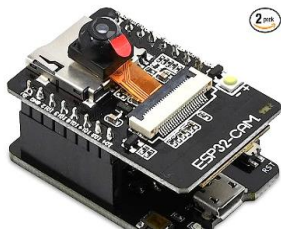
2PCS ESP32-CAM-MB, Aideepen ESP32-CAM W BT Board ESP32-CAM-MB Micro USB to Serial Port CH-340G with OV2640 2MP Camera Module Dual Mode
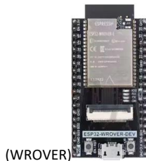
Note: While this manual primarily talks about the ESP32-CAM-MB, there is a similar tested alternative in the newer ESP32 WROVER CAM single board option. For some further preliminary details refer to Section 7 Wiring, Figure 6. The software is identical for both CAMs.
Dealing with video images involves complexities not normally associated with model railroading sensors. The sensorCAM is a complex device with a number of commands explicitly for setup and evaluation. In addition to these, several "output" commands can be used by a host to interrogate the "virtual sensor" output states. The initial setup can be somewhat involved and requires familiarity with most of the 25 commands discussed below.
The sensorCAM has two mutually exclusive modes of operation; the sensorCAM mode and the webCAM mode. The webCAM mode is essentially as described in the on-line tutorials. Use that mode only for education and curiosity. Invoke webCAM video mode by issuing the v1 (or v2) sensorCAM command to get a webCAM URL(e.g.192.168.0.64)
The ESP32-CAM does not have a USB port so you will need an FTDI interface or MB. We prefer the ESP32-CAM-MB (MotherBoard) interface which plugs directly behind the CAM. Check "The Workshop" You tube videos on-line for guidance. The MB is far simpler to use (needing no jumpers or cables) than a separate FTDI used in the videos.
The ESPRESSIF guide will show how to install the Arduino-ESP32 support. BE WARNED: using an FTDI(rather than MB) that has a jumper set to 5V and connecting it to the CAM 3V3 pin will destroy the ESP32-CAM. Many have died.
Installing Arduino-ESP32 2.0.6 documentation (readthedocs-hosted.com)
A tutorial on setting up the ESP32 on Arduino IDE is available on YouTube
ESP32 CAM-10 Dollar Camera for IoT Projects
Introduction to ESP32- Getting Started
The sensorCAM software is uploaded to the ESP32-CAM using the Arduino IDE. The sensorCAM has been programmed with two modes of operation; a webCAM mode (as in the on-line tutorial) and a sensorCAM mode. The limited power of an ESP32 prevents both functioning at the same time. Consequently, to see an image of the railway while sensorCAM is operational requires a third application (Processing 4.3) to retrieve a still image from the CAM over the USB cable to a computer. The Processing 4 .pde app replaces the Arduino IDE and IDE monitor retaining the sensorCAM command set and offering a (slow) image capture capability over USB cable. Processing 4 allows virtual sensors to be placed on an image of the railway with a simple mouse click.
In addition to the USB interface, you may need a prototyping board or Wrover expansion board to connect to the real world (power, indicators, control wires, and i2c.) Further details are given below. However to test the sensorCAM functions, one only needs the CAM with a USB port, with power from the USB port.
To control a railway, the railway needs a microcontroller based management system. This typically could be an Arduino Mega based system running software such as the DCC-EX CommandStation and EX-RAIL automation application. The EX Command Station(CS) solution requires the addition of sensorCAM specific code (sketches) as detailed later.
The lens system on the cam comes in (std) 66deg., 120 and 160deg. field of view. One can get longer ribbon versions and even 850nm(IR) versions to experiment with. These versions may be sourced independently of the ESP32-CAM. A wider coverage is possible with a 75-120deg(fish eye) lens, if needing to accommodate a lower ceiling height.
2. ESP32-CAM¶
The heart of the sensorCAM is the ESP32-CAM module containing an ov2640 camera sensor and a 32bit ESP32-S microprocessor. The sensorCAM software/sketch is loaded into the ESP32 using the Arduino IDE over a USB port with settings newline/115200 baud. Follow the above guidelines and run the camera example first, to get a demo webserver and CAM operational with a simple coloured test image. Experiment with settings to "get a feel" for the parameter effects which need optimization. The CAM has a considerable number of video related on-screen settings. Alternative ov2640 CAM Modules can be obtained with various viewing angles(66,75,120,130deg) if std.(66?) is too low. A "fish eye" lens(120deg.) will give barrel distortion, but the sensorCAM should still function acceptably but the low viewing angle could be problematical. The standard ov2640 can see some Infra Red light which may be utilised to see a bright IR LED as a beam-break sensor.
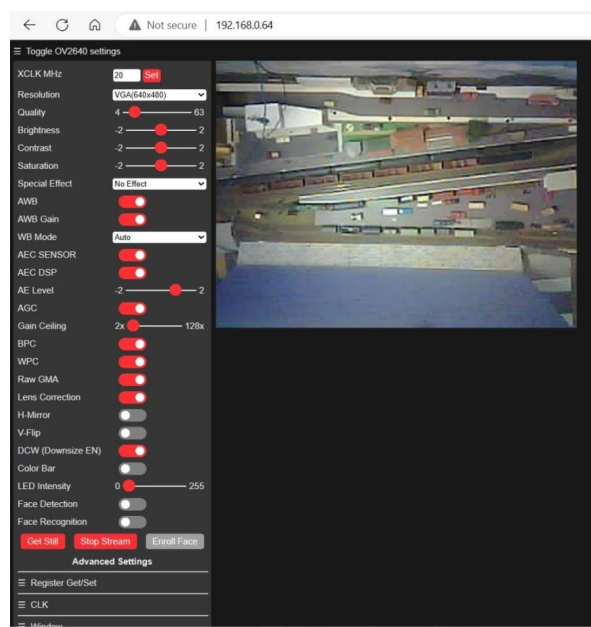
Figure 1. webCAM mode
Figure 1. is an example of the standard webCAM browser presentation. It is a very useful mode for alignment and as a training aid in investigating the effects of the many video adjustments possible, but does not allow placement of sensors as sensorCAM mode can't be simultaneously enabled.
Brightness, Contrast, Saturation, AutoWhiteBalance(AWB), AWBgain, AutomaticExposureCtl(AEC), AECdsp, AELevel, AutomaticGainCtl(AGC), AGGainCeiling and more can be adjusted. The QVGA startup settings of sensorCAM are:
Bri=0,Con=1,Sat=2,AWB=1,AWBg=1,AEC=1,AECd=1,AEL=1,AGC=1,AGg=9;(initial settings of 'c' parameters)
These can be changed after the CAM images are stable. C++ variables AWB9 and AGC9 may be set to 0 after 9 seconds in code. Find them and change in the sensorCAM.ino file if required.
If you "Start Stream", parameter changes will seem almost immediate. But with "stills", after changing a variable, you may have to click "Get Still" 3 times to clear the pipeline and get a changed image. In Stream mode, close observation will reveal changing whole image brightness/colour for several seconds after image disturbance (e.g. a hand in front of CAM) as the auto adjustments "correct" the image. These types of changes can trip the sensorCAM even if the obstruction does not block the virtual sensor. Consequently after power-up, the sensorCAM may stabilize and then turn off some auto adjustments in the first 15 seconds. Changing environment lighting may result in a need to use a "re-reference" command, for example perhaps after sunset or turning on extra lighting.
Due to the slowness of the ESP32 & wifi, the "live stream" is slow and a webCAM delay in response will be observed. This may be a little quicker for the sensorCAM sensing mode. The delay is inevitable in webCAM WiFi mode.
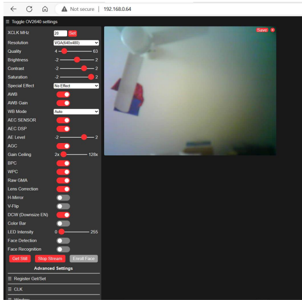
Figure 2 Initial sensorCAM settings
After the sensorCAM has booted up, it reads frames for 9 seconds before automatically doing a reference grab for all defined sensors (the r00 command). ver320 by default sets the CAM configuration to those below. When sensorCAM is running, a user may tweak these settings via a USB monitor 'c' or 'j' commands if required.
Bri=0, Con=1, Sat=2, AWB=1, AWBg=1, AEC=1, AECd=1, AEL=1, AGC=1, AGg=9; (initial settings of'c' parameters)
The ESP32-CAM has an Infra-Red(IR) filter to enhance colour response. The sensorCAM relies on strong colour contrast(saturation) to detect changes. Low lighting levels and poor contrast degrades performance. Some IR penetrates, so the CAM may use an IR LED for reliable beam-break sensing.
To run the sensorCAM.ino, it will be necessary to configure the Arduino IDE for the ESP32 as covered in the above you-tube tutorial links. Load and run the demonstration. For the sensorCAM, you will require new files as described in the sensorCAM installation Guide. The ESP32-CAM uses the "Al Thinker ESP32-CAM" found under Tools:Board:ESP32 (select Tools> Board: ESP32:"ESP32 Wrover Module" for WROVER-CAM). Select Partition Scheme: Huge APP. Check the correct Port is selected, compile sensorCAM.ino, and upload to the CAM before opening the Arduino monitor.
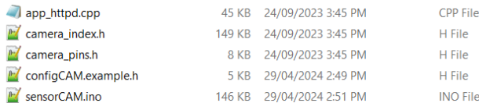
The ESP32-CAM can take rgb565 frames at 13/second. However it is a 3 step process; image sensing, processing and storing. It will then take further cycles to assess the state of the 80 virtual sensors in the frame (another two cycles). A total of 5 cycles places a significant limit on the sensorCAM speed of response time (up to 0.5 seconds at 10 frames/second). A fast HO loco can travel 160mm @ 100kph, so this latency might need to be accommodated in planning virtual sensor locations.
3. Physical Installation¶
For testing purposes you will need a computer with a spare USB port and the Arduino IDE software installed. The PROCESSING software is also advisable as it gives a more reliable and convenient image for setup. A long powered USB cable(5m?) may be an advantage as the sensorCAM may be some distance from the PC. For a final installation the sensorCAM would be connected via a cat5/6 cable carrying power and a differential i2c bus (of up to 30m) to a microcontroller, Command Station or similar. Some different practical solutions are explored in Appendix F.
For a test hookup between a USB powered sensorCAM and a Command Station (mega) with a short existing i2c bus, provided the total length is under say 3 meters, a simple, cheap arrangement could be tried using a PCA9515A buffer and level shifter. It requires soldering 5 wires to the underside of the MB USB interface. This improvisation is not an ideal "universal" arrangement. The PCA9515A is mounted on 1/16" thick double-sided adhesive foam mounting tape. The CAM on i2c bus is best used theoretically with the USB computer running on battery power alone (unplugged) to absolutely avoid ground loops and associated electrical noise, but will probably function OK anyway.
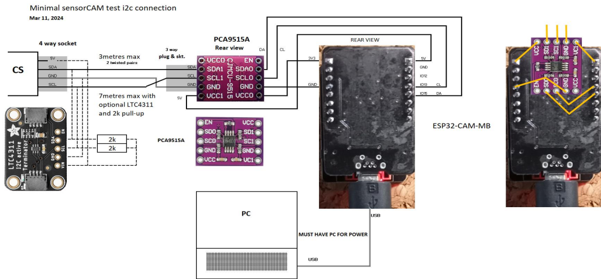
Figure 3 CAM with 3.3 to 5V i2c interface and optional LTC4311“terminator” for greater reach
The sensorCAM is preferably placed above and square-on to a section of layout at a height of 1 to 1.8m above the surface. 1.2m gives a max. coverage of approximately 1.2x0.9m with the standard lens. Another arrangement with several advantages is to place the CAM near the surface so as to view the surface via some good mirror tiles placed on the ceiling, positioned to ensure coverage of the desired sensor locations. This may increase coverage, especially if multiple mirrors are at slight angles. The mirror arrangement with benchtop level mount allows for wider coverage with low ceilings, and also places the CAM in a more accessible spot for wiring and maintenance. Mirror tiles do not need to be perfectly flat, some image distortion is acceptable, but they must be stable. Oblique camera angles may also be used to advantage, but sensor location and tripping point may be compromised somewhat.
Lighting is critical for reliable operation. Theoretically, the lighting should be steady. Both LED flood and Fluorescent lighting might degrade results due to the flickering levels of illumination at 100/120 Hz. Use quality LED lights. The light fittings should not be visible in the camera's field of view. A uniform level of lighting is the objective, with a minimum influence from fluctuating daylight, fans and cloud shadows through windows. Some experimentation may be needed to avoid local "glare". Images may show white test panels to have several drifting horizontal dull bands produced between cycles of the mains supply (Figure 4). Bright lighting is desirable (good quality LEDs?) to enhance colour differentiation. Check for flicker by taking a "slo-mo" video on a cell phone. Fluoro's are bad!
The mount needs to be rigid to avoid vibration which can trip sensors due to small image movements. It also needs to have a suitable route for a (cat5) cable for its own power supply and the necessary i2c communications. The length of this cable needs to be considered if the railway's i2c network is otherwise long. The prototype CAM has been fitted with i2c buffers and used on a 20m buffered 5 Volt i2c Cat5 bus, but the quick connection above (using PCA9515A) is for short lengths only(i2c under 3m). Up to 7m may be achieved using 2k pull-up resistance and one LTC4311 "terminator" to enhance signal rise time. Benchtop mounting with mirrors minimizes this length issue. A very good alternative for longer cables is the Sparkfun differential Endpoint system.
Most reliable results may be obtained with light grey coloured ballast and dark sleepers. If results are inadequate, light green (grass?) or yellow "reflectors" between the rails may relieve any problem (recommended in fiddle yards). If lighting throws shadows beside rolling stock, the shadows can be used advantageously by good sensor placement.
For initial configuration, access to the sensorCAM's USB port is important. Loading computer code over a long USB cable is problematic, but monitoring and tweaking settings may be done with a reduced BAUD rate or a (5m?) buffered USB cable at 115200 BAUD. A benchtop mounting with mirror would help here.
With regards lighting, fluoroescent or LED lighting normally flickers at twice mains frequency so it pulses at 100 or 120Hz. This is normally tolerable, but it can be seen in a sensorCAM image on a uniformly white test panel as below (Figure 5). In 100mSec there could be up to 10 bands in one image. SensorCAM tries to synchronise with the mains frequency, but if it fails the faint bands will drift across the sensors and potentially trip them in the worst case scenario. Set the threshold high enough to avoid such trips or (better) change lighting. Figure 4 shows an example of bad 100Hz banding.
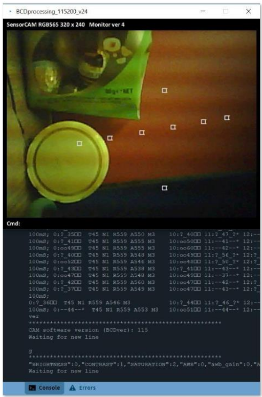
Figure 4 Test image showing fluorescent or LED light banding
4. Notation & Help commands¶
4.1 Notation¶
The notation used in the reference material uses symbols according to the following convention:
% used to designate a digit as part of a bank/sensor designator in bsNo style. i.e. 0/2, b/s or %/% or %%
# used to designate a digit as part of a decimal number as in ### for a 3 digit decimal number.
$ used to designate a single alphanumeric character (0-9 or A-Z) depending on context.
S Capital S may be used to refer to a specific sensor such as S02 for example. Designation format: S%%
[ ] Square brackets may be used to indicate optional command arguments (don't include[] in command).
Sensor "bsNo." number consists of two digits preferably written separated by a '/' as in 1/2 but in commands this is reduced to 12 as in command i12. Command 'i' has the form i%% indicating it requires a 2-digit bsNo. As 49 is an invalid bsNo.(s range is 0-7), i49 is invalid. Some commands require a DECIMAL number and are expressed as having form t## for example. t49 is therefore a valid command. The 'm' command takes the form m$,## requiring a single digit and a 2-digit decimal number. For more details on commands see APPENDIX A.
Where bsNo.'s are printed, they can take several equivalent forms depending on context. Where possible they are printed as %/% e.g. 2/3. However an equivalent form is 023. Any printed sensor number starting with a '0' can be treated as equivalent to the '/' form so 023 == 2/3 == bank 2 sensor 3. The 0%% form is in fact the "OCTAL" format of bsNo. (Note: OCTAL for 8/7 is 0107 & 9/5 = 0115. Keeping usage to banks ranging from 0 to 7 avoids any confusion).
Some diagnostic output (e.g. f%%) may resort to another numbering system (i.e.HEXADECIMAL) for compactness, but for normal usage this notation can generally be avoided. Just be aware of the context in which numbers are being used.
Where words are in italics, these are the actual names used in the C++ programs for sensorCAM. Consequently they may seem cryptic, but their function is hopefully clear.
NOTE: sensorCAM c++ Code may use "active" & "enabled" interchangeably.
4.2 Help commands¶
As the sensorCAM is still under development, the sketch still has numerous debugging options and a couple may be useful in understanding and optimizing the device. The help command has the form 'h#' where the digit# turns ON a debug output. The following h# output options might be useful, particularly h7, i.e. a triggered wait (w):
h shows current settings for help, maxSensors and brightSF
h%% sets maxSensors to%% for%% from 10 to 97 (m0,%% is better alternative)
h- turns OFF all debug options. h-# turns off individual debug values(5-9 only).
h0 some detailed debug values for each sensor including the algorithms colour Cratios, Xratios etc.
h1 outputs timing measurements for parts of code
h2 more general debug including brightness numbers
h3 outputs i2c related info. (if communicating)
h4 produces some auto-reference refresh info
h5 spare
h6 Outputs a text message whenever ALL enabled sensor references are refreshed.
h7[,#] causes the program to suspend any new data streaming upon any trip of the bank 1 sensors, allowing inspection of sensor data by using commands like f%%, & , etc. h7,# changes default(1) to bank #
h8 This causes up to 30 i2c commands from CS to be echoed to the wait screen e.g. EOE#E7E2E2E2E4E4E4 E6 is not echoed because of its 50/sec frequency the pattern would be E4E6E6E6E6E4E6E6...
5. Configuration¶
5.1 Plan a grand sensor numbering strategy¶
The first step is to decide a sensor distribution strategy & numbering strategy (not set in stone). A sensorCAM has 10 banks (0-9) of eight (0-7) individual sensors available (total 80). Each bank can be tested as a whole to see if ANY sensors tripped or NO sensors tripped. Also placing a string of sensors in a row, for example along a platform, can indicate train position with the binary bank value increasing as the train approaches a signal as it crosses sensors 0 through 7 (see Figure 5 for examples). Sensors are generally referred to with a two digit bank/sensor designation (their bsNo.) e.g Sensor 68 and 69 are therefore invalid bs numbers, 97 is valid. Use one bank for a platform (set of 8 sensors). Sensor S00 is reserved as a brightness reference sensor. Sensor S06 is also RESERVED for now. It is suggested that user's Sensors start with bank 1, i.e. S10 (vPin #08), S11 & upwards, with related sensors in their own bank. They do NOT need to be sequential (Follow the installation Guide for full details). With the recommended definitions set up, the user does not need to remember or refer to vPins for sensorCAM sensors at all - just use the S%% idntifier.
For an EX-Command Station(CS), the 80 sensors will have vPin numbers ranging from #00 to #79(DECIMAL) and mapped to 80 b/s id's(S00 to S97). Users can use, for example, AT(CAM 0%%) in EXRAIL commands where a vPin ID is called for. For the technically minded, vPin=BasePin+bx8+s. For further details on adopted notation, refer to section 4.1.
5.2 Preset the wifi SSID and password¶
Before uploading the software into CAM check that it has the appropriate WiFi definitions for your railway WIFI_SSID & WIFI_PWD and perhaps for your test area ALTWIFI_SSID & ALTWIFI_PWD are in your configCAM.h
5.3 Adjust other configCAM.h settings¶
a) If i2c address 0x11 is in use, change to 0x12 (or 0x13) i.e. I2C_DEV_ADDR 0x11 in your configCAM.h
b) If you want to use "larger" sensors, Place #define SEN_SIZE 2(1-7) in your configCAM.h(ver169+)
c) The first TWOIMAGE_MAXBS sensors use 2 consecutive image averaging to suppress noise spikes. If you want to set a different range to use this feature, change configCAM.h from the default(030) before upload.
5.4 Load sensorCAM software¶
Follow you-tube to pre-configure the Arduino IDE for ESP32. IF using an FTDI interface take EXTREME care not to connect 5V to the 3.3V CAM supply pin as this destroys CAMs. Using this IDE, load the software into sensorCAM with it unmounted. Then mount the CAM in a suitable place for tests. A long USB cable is problematical.
5.5 Establish a monitor screen to sensorCAM¶
Establish a USB connected monitor (e.g. Arduino IDE monitor, or PROCESSING monitor, preferably at 115200 baud. The PROCESSING monitor coded for the sensorCAM has the advantage of displaying the CAM's railroad image (or selected part thereof), albeit rather slowly!). Because of the many changeable CAM parameters, the WiFi link(webCAM) is not a reliable indicator of the sensorCAM image quality. It may be better or worse. The PC (using Arduino IDE) is only able to show images via WiFi, but because the sensorCAM runs on RGB565 format it cannot send WiFi (jpeg) images without rebooting into WiFi/jpg webCAM mode (under which it cannot read sensors!). The reboot/display/reboot cycle for WiFi webCAM is also tediously time consuming.
The sensorCAM takes some time to boot and establish sensing mode. The white flash LED starts flashing on every frame after about 10 seconds and data flows to the USB terminal. A period of averaging ensues with "good" sensing by about 30 seconds. This flow of data (and sensing!) can be suspended with the 'w' wait command. Some commands (including a blank line entry) will subsequently restart the sensing camera and sensor output. The CAM may crash if it is left waiting for input for over 30 minutes. Reference images would also be long out of date.
5.6 Verify wifi webCAM operation¶
The CAM can be switched to WiFi webCAM video mode with the 'v1' command. 'v2' can select your alternate WiFi network. ('v' will give sensorCAM software version). 'v1' (or 'v2') will reboot and load WiFi mode connecting to the network selected, and providing a URL e.g. http://192.168.0.xx that can be used to connect with a browser. An image, like Figure 1 above, should be seen with controls for experimenting with Brightness etc. This image is educational but not necessarily a good indication of the sensorCAM (sensor mode) image because of the unpredictable parameter effects. To see a more reliable image run the PROCESSING SensorCAM.pde monitor instead of Arduino IDE monitor (refer Section 6.). To exit video mode, try the monitor command 'R' (or'F') If this software reset fails, try manually rebooting the sensorCAM (power OFF/ON) or via the on-board black push-button using a non-metallic tool!
5.7 Familiarise with sensorCAM command set.¶
Proceeding with the steps below, before mounting the camera over the railroad, is advisable to learn the steps and familiarize oneself with the sensorCAM command set. The setup commands will have to be repeated accurately once the CAM is mounted in its final location.
5.8 Sensor placement¶
Setting up the CAM first requires locating sensors. When deciding on sensor location, be aware that the sensor response is slow compared to conventional sensors. Allowing for 500mSec delay, which at 100kph equates to 150mm of travel(in HO), may influence sensor placement. Best performance is obtained if the sensors are not within 20 rows/columns of an image edge. Remember to save to EPROM with the 'e' command once satisfied. Virtual sensor location can be set up in several ways. Option d. is preferred.
a. Automatic loading from EPROM on bootup. This is only applicable after an initial sensor set has been established and command 'e' used to save them to EPROM.
b. The bright LED method: Place a bright LED at the required location and reduce room lighting if needed. Issue an 's%%' command (e.g. s00 for an off-track reference sensor) and wait for the CAM to scan and locate the LED and setup sensor coordinates. Remove the LED, restore lighting, and perform an 'r%%' for new reference images.
c. Issue a 'k%%,rrr,xxx' command to place sensor[%%] at CAM pixel position xxx(column) and row rrr(y). This method is most useful for "tweaking" coordinates if you want to adjust the result of the LED method(the CAM has 240 rows/lines of 320 pixels each, numbered from 0). Use the 'i%%' command for status of sensor.NOTE: Use 'k' to set up test sensors initially, but delay setting final positions until Processing 4 installed and enhanced 'k' and 'a' available. The alternate advanced 'a' command does 3 commands in one (i.e. k, a & r).
d. Running Processing 4, an image can be downloaded, a bsNo. nominated by typing k%% (or a%%) and the mouse click on the image appends coordinates to k%%. Press Enter if the command is complete and correct. Similarly, the enhanced version of 'a%%' sets position, enables, and records a reference all in one command.
5.9 Sensor status and save¶
Once a sensor has been located, the 'p$' command can show/tabulate all defined positions up to bank$. To enable a sensor use the 'a%%' command. This will enable AND record a new reference image for the sensor. It will then be included in the screen "data dump". Only "enable" sensors when UN-occupied, or do an 'r%%' later when the sensor is empty. Also, remember to do an 'e' command when you want to save positions in EPROM for next time.
5.10 Set a Sensor Threshold¶
A threshold needs to be set to define the level of difference in image required to register a sensor trip or "Occupation". This typically ranges from 40 to 60. Try 't45' for starters. Some fluctuating lighting and electrical "noise" needs to be tolerated, but a higher threshold reduces sensor sensitivity for dark-on-dark contrast in particular. If there are "noise" trips, adjust the threshold or min2trip a little higher. See APPENDIX B for more.
5.11 Limit printout to manageable range¶
It is desirable to set (using 'm') a maxSensors parameter (e.g. 030) to limit diagnostic printouts to a manageable screen width, and especially important to set the min2flip parameter which helps filter out noise trips. However min2flip slows the response to valid trips by 100mSec (frame rate) per extra count. Suggest settings of 2(default) or 3. e.g.'m3,30' say. Note: maxSensors (pulled from EPROM) limits the following....
a. the data stream for monitor, limited to enabled sensors below maxSensors (and above minSensors)
b. histogram printout, to enabled sensors below maxSensors (see statistics command '&')
c. the boxlt() sensor boxes seen on Processing images, for enabled sensors below maxSensors
d. i2c buffer data for 't' record, to bsn's below maxSensors (and above minSensors)(sent to Command Station) The cmd 't' acts as a flag to prepare a packet of i2c data that the CS can reconstitute as per the USB ASCII data stream.
5.12 LED bank trip indicator & EPROM¶
If you want a LED bank occupancy indicator on the CAM, use the 'n$' command to cause a bank occupied LED to show (default Bank 2). nLED, min2flip, maxSensors and threshold can be saved to EPROM, along with sensor positions and twins (see 5.15 below) with the 'e' command. minSensors is not currently saved in EPROM (set by'n')
5.13 Sensor reference image refreshing¶
Although sensor enabling (a) causes an immediate reference capture, it may be necessary to occasionally do a fresh reference capture for all sensors (make sure they are unoccupied!) by using the 'r00' command. Individual sensor references can be refreshed using 'r%%'. The results of a refresh can be seen in the scrolling "data dumps" of enabled sensors, their "difference scores" (32-99), and their perceived occupancy state. The sensor S00 is constantly averaged and refreshed every 6.4 seconds. Furthermore, there is an automatic refresh process that cycles through enabled sensors and regularly averages 32 consecutive sample images.
If the sensor remains unoccupied, it updates the reference, compensating for slow lighting changes. This is SUSpended initially (after Reset) until an 'r%%' command is issued by the user, after which "SUS" will disappear from the output data. The latest version of sensorCAM ASSUMES the sensors are all empty, and automatically ends SUSpend mode early.
5.14 Scrolling data interpretation¶
The scrolling data dump displays “SUS” (suspend) if auto updates are off. It also displays threshold(T), min2trip(M), the bank assigned to the on-board LED (N), S00 reference diff. score, as well as the S00 reference brightness(R) and its current actual brightness(A) and other enabled sensors. ‘A’ is the Actual latest sum of the 48 bytes of a sensor image (max 3024) and should be between 1200 and 2500 ideally. Following a reference refresh (r), for an unoccupied image, the (noisy) diff scores should be 32-37. If references are being updated, a note will appear at the right hand side of the data dump in the form of “Ref 0%%” to indicate that a new reference for an UNOCCUPIED sensor has occurred. This dump allows for performance monitoring during commissioning.
:oo46## indicates tripped sensor (## = occupied) sensor are shown by default with a central diff score (32-99).
:?-46-? indicate an above threshold image potentially occupied (waiting for min2trip).
:oo47?T indicates suspected occupied but no confirmation from Twin (see 5.15).
Using the '@##' command, the "#" "tripped" indicator (35) can be changed to any ASCII character (01-127). For recent versions of Arduino IDE monitor, '@' or '@12' command gives a particularly wide BOLD "spade" occupied character that is easier to spot (don't use @ or @12 if it doesn't produce the "spade" as it will misalign columns. Try @11 instead.).
5.15 Second opinions (Twin)¶
If necessary, another option can be tried to address "noise" trips if all else fails. It is possible to "get a second opinion" on a sensor by assigning a "Twin" sensor (using i%%,$$). For example if sensor S15 is prone to noise trips, set a Twin using sensor S05(say). Set up the Twin position to touch or slightly overlap the primary sensor(S15) with the commands ‘a05,rrr,xxx’. The primary sensor will not register “Occupied” (tripped) unless the Twin agrees. Note: The Twin should have a bsNo less than the primary sensor to avoid introducing an extra 100mSec delay to the trip time as the lowest bsNo is evaluated first. We suggest using bank 0 for twins, or a lower number in the same bank.
5.16 Other diagnostic commands¶
There are other commands that can be used to optimise the CAM performance by trial-and-error. These include Frame(f), GetCAMsettings(g), adJustCAMsettings(j) and Statistics(&), also Calibrate(c)(not recommended). If the scene contrast is inadequate, a lighter reflector between the tracks is a cure particularly in fiddle yards (e.g. light green grass).
Explore and familiarize: Operational output commands will give the sensor states and include Individual(i), Bank(b), Diff(d), Position(p), & Query enabled(q). Other input sensor commands include Zero(o), One(l), Enable(a), Undefine(u) & the define coordinate(k) command. Zero 'o'(oscar) and One 'l'(lima) preset and disable sensors.
NOTE: Historically the term "activate" has been used in the CAM program rather than "enable". In the context of sensorCAM, activated means "enabled" rather than output "1" as typically may be used in EX-CS sensor documentation. This manual has been rewritten to use the "enabled" terminology, but names and references in the actual program still use the original terminology, so interpret “activated”, in a sensorCAM context, as "enabled". Sensor output is referred to as "tripped" (1/occupied) or "untripped" (0/unoccupied).
Test image with Fluorescent or LED lighting - note three faint dull stripes across white test panel in Figure 5 below. Strong banding is also evident in Figure 4. Horizontal stripe position varies frame-to-frame as not effectively synchronized with mains yet.
(Figure 5 image was obtained using V, H & Y60 Processing commands)
The mains supply synchronization is currently inadequate (ESP32-CAM limitation) so drifting illumination bands will add a little to the "noise" seen by the sensors. The significance of this may need evaluation by experiment.
5.17 pvtThresholds & sensor size¶
Two additional features have been added which may resolve lingering issues. Individual thresholds can be set to override the "global" threshold set with 't##'. The command 't##,%%' will set a pvtThreshold for sensor S%% replacing the "global" (t##) value. It can be removed with the 't00,%%' command. This way a higher threshold can be set on a "noisy" sensor. While an increased pvtThreshold may reduce its sensitivity, it has no effect on the other sensors. 't1,%%' will cancel all pvtThresholds in one bank, while 't1,99' cancels ALL pvtThresholds in the CAM.
The second feature enables the size of the sensor to be increased. This is done by inserting spare pixels in a cross(+) through the 4x4 sensor moving 4 pixels out to each of the corners of a larger footprint. The parameter SEN_SIZE (default 0) adds from 1 to 9 rows of spare pixels. This parameter is set in configCAM.h and may, for example, allow a sensor to be placed so as to register a greater variation in pixel values. A uniform 16 identical pixels is less effective than ones capturing various colours/shades. If it can include a shadow of a passing loco/wagon, then the "diff" can be stronger and a more positive trip attained. A footprint size increase affects ALL sensors.
It is desirable to place sensors where they generate a "mottled" image of pixels rather than a uniform colour which makes distinguishing grey roofs against plain grey track hard. Pixel size is therefore relevant. It is helpful if the pixels are the width of sleepers so they can be distinguished. If they can't then try an offset sensor that sees track bed and trackside grass/shadows say. Table 1 indicates pixel/sensor sizes relative to sleepers and track gauge. It shows that sleeper detection is limited with the ov2640 QVGA (240x320) resolution. Future sensorCAM variants may do better. An angled camera (less than 30degrees) could benefit from a glimpse of the side of the loco/coach/wagon and increase the field of view, but parallax issues may arise.
| OV2640 | CAM(std. lens) | field of view | 54 deg | |||||||||
|---|---|---|---|---|---|---|---|---|---|---|---|---|
| CAMERA HEIGHT: | (mm) | 800 | 800 | 1000 | 1000 | 1200 | 1200 | 1500 | 1500 | 1800 | 1800 | |
| app. image width | (mm) | 810 | 810 | 1016 | 1016 | 1220 | 1220 | 1525 | 1525 | 1830 | 1830 | |
| QVGA | pixel size | (mm) | 2.18 | 2.18 | 2.73 | 2.73 | 3.27 | 3.27 | 4.09 | 4.09 | 4.91 | 4.91 |
| SEN_SIZE: | setting | 0 | 2 | 0 | 2 | 0 | 2 | 0 | 2 | 0 | 2 | |
| Sensor Size | (pixels) | 4x4 | 6x6 | 4x4 | 6x6 | 4x4 | 6x6 | 4x4 | 6x6 | 4x4 | 6x6 | |
| ratio:gauge/sensor | ||||||||||||
| scale | sleeper | std gauge | ||||||||||
| O 1:43 | 5 | 32 | 3.7 | 2.4 | 2.9 | 2.0 | 2.4 | 1.6 | 2.0 | 1.3 | 1.6 | 1.1 |
| HO 1:87 | 2.5 | 16.5 | 1.9 | 1.3 | 1.5 | 1.0 | 1.3 | 0.8 | 1.0 | 0.7 | 0.8 | 0.6 |
| TT 1:120 | 1.8 | 12 | 1.4 | 0.9 | 1.1 | 0.7 | 0.9 | 0.6 | 0.7 | 0.5 | 0.6 | 0.4 |
| N 1:160 | 1.3 | 9 | 1.0 | 0.7 | 0.8 | 0.6 | 0.7 | 0.5 | 0.6 | 0.4 | 0.5 | 0.3 |
| (mm) | (mm) |
Table 1. Comparison of sensor sizes and track features Ratio of gauge/sensor dimension
6 PROCESSING4 monitor/console¶
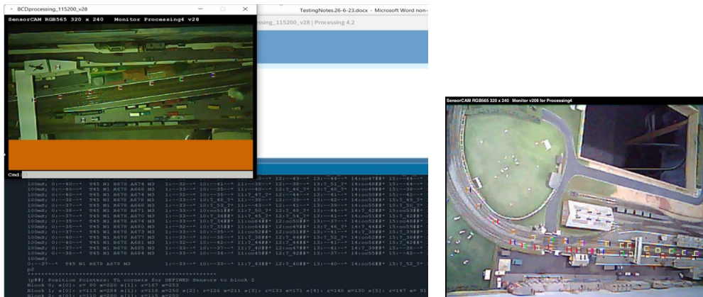
Figure 5 Processing 4 Console and image window
Note: Sub-optimum 'c' settings caused green tint.
The Processing application displays the image using sensorCAM settings, and also shows colour coded sensors. As previously stated, the PROCESSING application is a crude USB monitor that enables the user to control and configure the sensorCAM with the additional benefit of being able to invoke a display of the image. All the sensorCAM commands can be used. At 115200 baud, a full RGB565 image takes 13 seconds, but it is often convenient to reduce this by prescribing a smaller image segment of limited rows and/or columns(e.g. Y120 for lower half of a 240 row screen).
The Processing 4 application can be downloaded from here
The SensorCAM.pde code assumes the USB port for the sensorCAM is the lowest (comNo=0;) on the list displayed on startup. Should this not be the case, for example if another USB is being used to simultaneously run an IDE to a Command Station, then the comNo=0; code line (15) of the sensorCAM.pde will need to be increased to, for example, int comNo=1;
You may also increase the image display window size by editing the final int SF=2; line (16) to =3; or =4; on high res. screens.
The sensorCAM Processing 4 monitor accepts commands W, X, Y & Z which allow one to nominate a "strip" or subsection to image. e.g. Z80 X240 Y will update the last quarter image(columns 240-319) of the 240x320 pixels in 4 seconds. This shortcut method enables, for example, comparison of quarter images under different lighting conditions by using different X values. Similarly W60 Y120 will produce a quarter image from row 120. Each part image is pasted over previous images. Each new image appears more quickly if only a subsection is specified this way. The next image can be flipped Vertically(y) and Horizontally(x) by using V &/or H before capture. The Figure 5 image used V H Y60 The values for V, H, W, X & Z are remembered for subsequent 'Yrrr' commands so need not be repeated.
NOTE: Do not flip image before creating new sensors as cursor coordinates don't flip!
The image will have enabled sensors (b/s) boxed and identified by a (resistor) colour code. Left bar is bank# and right bar is sensor#. Combined, they give the bsNo. If two sensors have the same coordinates, the colour code will be for the highest bsNo. N.B. Only sensors below maxSensors will be boxed. Note the 'H' command will REVERSE the coding from b/s to s/b.
(The std. resistor code is 0:black 1:brown 2:red 3:orange 4:yellow 5:green 6:blue 7:violet 8:grey 9:white)
PROCESSING4 command summary:¶
W### will limit the image to ### rows wide/high(1-240) - default 240
X### will start the image from column ###(0-319)-default 0 - uses the sensorCAM 'x' command.
Y### will initiate an image download starting at row ###(0-239)-default 0 - uses the sensorCAM's 'y' cmd.
Z### will limit the image to ### columns(1-320)- default 320 - uses the sensorCAM 'z' command.
H will flip/mirror subsequent images horizontally(x).(Note: reverses bsNo sensor colour code to s-b!)
V will flip/mirror subsequent images vertically(y). (V + H effectively rotates image 180 degrees)
R will cause a firmware reset of the sensorCAM via the DTR line of the FTDI interface. CAM will enter a wait mode for confirmation. Reset can be aborted with command 'aw'(Abort&Wait). Ctrl-R Resets CAM instantly.
NOTES:
-
The above commands ARE CASE SENSITIVE. They are recognized by Processing 4 as non-sensorCAM commands and processed in the monitor/PC. Commands X, Y & Z in turn automatically issue related sensorCAM commands x, y & z respectively, with appropriate parameters. The 'y' command is used repeatedly, once for each new image line(row). The 'y' command suspends sensorCAM immaging, holding a single "frozen" frame until a terminating command ('yy') is received. To resume normal operation at the end of command 'Y', the double-y command 'yy' is automatically sent. However, if the user enters a'y' by error (rather than upper case 'Y'), the monitor may show a binary string of data(verbose mode) and a manually entered 'yy' is needed to recover. Typing lower case x or z may also negate any previous X or Z settings.
-
If you use H to mirror, the colour coding for boxed sensor number (b/s) has to be read right to left.
-
Ctrl-E and Ctrl-N enable/disable echo of commands, as typed, to the monitor/log file. It can replace the user's focus on the CAM image Cmd: window. YO helpfully toggles the verbose mode. The command Y images from row 0 by default.
7 Wiring Requirements¶
Refer to Figure 7 and Appendix F for alternate solutions for connecting sensorCAM to an i2c bus for remote control. For initial testing, the basic ESP32-CAM and ESP32-CAM-MB (CH340 based USB Mother Board) could be sufficient. Take care to use level shifting(PCA9515A or Endpoints) if using a 5V mega CS.
The recommended hardware interface to a CS is currently the Sparkfun Endpoint system which permits the i2c bus to be run over long standard Cat5 twisted pair cable, which can also carry the required raw power supply. The Sparkfun Endpoints are used in pairs and can cater for voltage shifting between 5V Command Stations(e.g. Mega) and 3.3V sensorCAM as required. For the very simplest off-the-shelf arrangement, an ESP32-WROVER-DEV CAM with a cheap ESP32 breakout board including regulator can be linked to an Endpoint with 4 Dupont wires for a working CAM system on the end of a cat5 cable of considerable length as indicated in Figure 6, needing only a remote, preferably electrically isolated (floating), 9-12Vdc 0.5A power supply and a matching Endpoint on a Command Station. For a cheaper solution, use the PCA9515 with dupont jumpers for a limited (2m?) reach with either esp32-CAM or Wrover-CAM.
Note: The Sparkfun Endpoint may also need a jumper cut or joined for i2c bus voltage level matching to the Command Station.
The SensorCAM software has been almost exclusively tested on the ESP32-CAM-MB as seen in Figure 7. The original prototype was fitted with some enhancements that may not be needed for the user's application, such as an external antenna and extra LED indicators. NOTE that an Antenna attachment to the ESP32-CAM requires a solder link adjustment on the CAM (refer you-tube CAM tutorials) but most wi-fi works with the on-board antenna. However, at least one "super bright" LED (the "programmable nLED") is recommended for convenience to visually indicate when a sensor is "tripped", connected between 3.3V via a resistor (~470R) to GPIO14.
For testing beyond that available via a USB cable, the most basic interface to a short i2c cable to a Command Station (Mega) is based on the PCA9515A level shifter shown in Figure 7. This is limited in range and may require tuning of the i2c bus for best performance. See Appendix F for a more capable Sparkfun Endpoint configuration using a separate 5V switching regulator, at a small increase in cost, reliability and effort. The connection cable between PCA9515A and CAM may be up to 2m long for extra reach.
The ESP32-WROVER-DEV board is a good alternative to the ESP32-CAM-MB. The slightly bigger CAM will be a little more convenient with the ESP32S 38P Expansion board. This 38 pin expansion board with 5V regulator is described in the video below. IGNORE PRESENTERS DESCRIPTION OF HIS FAULTY 5V REGULATOR past the 5minute mark. With NO Wrover, verify the regulator gives 5V from 9V at the barrel jack and remove power before inserting or removing the Wrover. For want of a better video...
ESP32S 38P/V4/ Expansion board
The SensorCAM software has been almost exclusively tested on the ESP32-CAM-MB as seen in Figure 7. The original prototype was fitted with some enhancements that may not be needed for the user's application. However, at least one “super bright” LED (the "programmable nLED") is recommended for convenience to visually indicate when a sensor is “tripped”, connected between 3.3V via a resistor (~470R) to GPIO14.
The ESP32-CAM reset button, remotely mounted on CAM, may be difficult to access. To reset the device, two options need to be available. These can be via software command, either from the attached USB monitor, or i2c connected Command Station, or via a power supply induced reboot. A switch at the (“wall-wart”) 9V supply is recommended independent of the CS supply. The USB connection is needed to set up the sensors initially and view images, but should be able to be disconnected once setup testing is complete. Some esp32's may need a 1uF on the reset pin for reliable reset.
Note: Care is needed as the WROVER CAM has 40 pins (not 38) but the spare end Gnd and Vcc can remain disconnected (cut off?).

Figure 6 ESP32 WROVER-CAM & interface
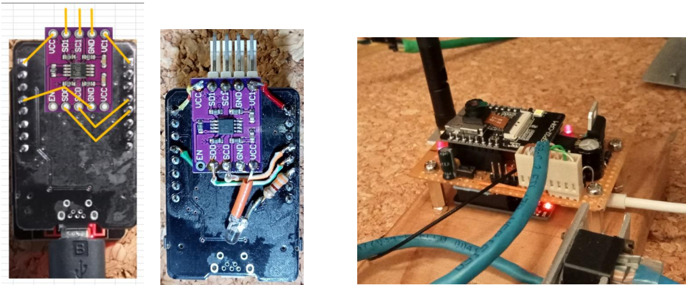
Figure 7 PCA9515A 3.3V to 5V i2c interface improvisation compared to a full feature prototype solution
Note: for 3.3V microprocessors (e.g. CSB1) ensure Vcc1 is connected to 3.3V (Vcc0) not 5V.
8 Host Communication¶
8.1 Intro¶
The operation of the railway depends on a Control Station that polls the sensorCAM for sensor states. This might be a dedicated Arduino Mega 2560 for example. It might be a CSB1 Command Station running DCC-EX and EXRAIL software. If the sensorCAM is powered up with default settings (from EPROM), or adjusted by the user at the start, the program need only talk to sensorCAM over an i2c bus using the commands a,b,i,l & o for example, or it may be more sophisticated, providing a channel from a Control Station console to the sensorCAM to enable all configuration commands via the i2c bus.
The i2c bus is running at 100kHz on the prototype software. It has not been tested at any higher speed yet. It is running fine over a 20m long i2c bus to the master microcontroller(mpu or Mega).
8.2 DCC-EX Command Station¶
Setting up a DCC-EX Command Station, should you have one, requires configuration details placed in files config.h and mySetup.h along with a driver IO_EXSensorCAM.h and myAutomation.h. These must go in the directory containing file CommandStation-EX.ino. The IO_EXSensorCAM.h driver is based on the modified IO_EXIOExpander.h code. Refer to APPENDIX H for installation details. EXSensorCAM.h code mirrors the i,I,o,t & m commands, while the EXIODPUP command may serve as the enable function(a). EXIOExpander.h codes don't have the "control & setup" sensorCAM functions otherwise available from a USB console so additional functionality was added using the DCC-EX sensorCAM native command<N>(if using the newest CamParser.cpp).
8.3 Non-DCC-EX system¶
Proprietary Master: If writing raw code for another Command Station, you will need details on the protocol used by sensorCAM on the i2c bus, and code to interpret the bus bytes and reconstitute text for the console. Two such prototype examples exists. V155 of sensorCAM incorporates a subset of the DCC-EX IOexpander codes so that EXRAIL can use sensorCAM without further modification. V301 & later mostly use ASCII code characters.
8.4 Monitor Lighting¶
Stable good lighting is needed. Gross Lighting changes will have two effects, namely cause trips of most sensors and stop automatic reference refreshes, it may be wise to include monitoring for this eventuality by detecting and setting an "alarm" state. The reference sensor(S00) is automatically re-referenced every 6.4 seconds so will indicate a fault-trip for a maximum of 6.4 seconds. All other sensors will continue to indicate a trip until the user resets the references with an r00 (having checked all unoccupied). Setting up a second "reference" sensor (say S01) that would NOT get reset automatically and would stay tripped as a more enduring fault indicator could be helpful. You could reserve entire bank 0 for this purpose or use the 'nO' command to set the programmable pLED to light up if there is any enduring trip on bank 0. Consider using the "qLED" GPIO2. By default BLKOLED was set to GPIO2 LED, with BLK1LED to BLK3LED all set to GPIO33 LED. PLED is set to GPIO14.
9. Methodology of operation¶
__
9.1 Overview¶
The sensorCAM monitors up to 80 small square images (virtual sensors) each consisting of 16 pixels (4x4) the coordinates of which relate to the row/column of the top left pixel. The top left pixel of the QVGA (240x320) image is an r,c coordinate of 0,0. Sensors with coordinate 0,0 are considered "undefined". Sensors are electrically "noisy", so much effort was applied to avoid noise trips.
After boot-up, every virtual sensor is imaged and a Sensor_ref[ ] recorded. This is a ONE frame grab as a first guess. All sensors should preferably be un-occupied at boot up. If not, the user will have to manually take reference grabs at an appropriate time using the 'r%%' commands. The 'r%%' also triggers an IMMEDIATE start of a 3.2sec average Ref for S%%. 'r00' triggers a 1 frame reference refresh for ALL sensors but also starts the auto reference process, as does r%%. The latest version, at boot-up, commences regular averaged reference updates assuming all unoccupied. If an "occupied" state occurs during the averaging, the averaged ref. is rejected.
Every 100mSec the sensor pixels are decoded from the RGB565 QVGA image(2-byte) into RGB666 3-byte format and compared with the reference sensor image (in Sensor_ref[]) for changes. To allow for drifting light intensity, Sensor_ref[] needs to be periodically updated. The automatic updates occur for each enabled sensor(0/1 through 9/7 sequentially, each using a 32 sample average (in ~3.5 seconds) and replacing the old Sensor_ref[] provided there were no "trips" of the sensor during the sample period (3.5sec.). Hence updates occur only when sensor is UNoccupied, and only once every Nx3.5sec.(N being the number of enabled sensors). The brightness sensor(S00) is updated independently every 6.4 seconds with a 64 sample average. Each update is flagged to the monitor as it occurs(as "Ref 0%%" ). It is inadvisable to leave a sensor occupied for long periods if best reliability is desired. If a sensor is occupied for long periods of drifting illumination, the ref can become out-of-date to an extent that the sensor can remain PERMANENTLY "occupied". Manual re-referencing (r%%) would become necessary. EXRAIL code may accomplish this.
To detect a "trip" of a sensor, an algorithm evaluates a "difference" score between Sensor666[] and Sensor_ref[]. The (bpd) score is a brightness plus colour-diff sum. This (bpd) score is compared with the threshold ('t##') value. If it exceeds threshold, a flag is set and if after min2trip frames it remains set, then the Sensor "trips". It will then fall back (untrip) if min2trip frames go below threshold. min2trip is set to 2 by default as 3 will give an extra +100mS delayed response. The monitor data stream (scroll) includes the bsNo.%%, potential for trip ?- , the bpd score, or actual trip oo__##. If a twin (see below) inhibits trip, it indicates this with ?T. Minimum bpd score is 32 (identical).
e.g. (using t45) 12:--38--* 13:?-46-?* 14:oo50##* 15:?-53?T* 16:--35--* Only S14 has tripped.
A "second opinion" may be used to maintain a quick "trip" with greater reliability. This involves setting up a second "twin" sensor adjacent to the primary sensor. The primary sensor will only trip if the secondary sensor agrees (e.g. example for S15 above). The 'i%%,$$' command nominates a twin sensor (S$$) for sensor S%%. The (non-S00) twin should have a lower bsNo. than the primary to avoid extra delay, as they are evaluated in ascending bsNo. order.
As the sensor image suffers from excessive noise at low light levels, another averaging process has been included. For bsNo's below 3/0 (parameter TWOIMAGE_MAXBS), two consecutive images are averaged to remove noise spikes. The effect can be observed if one watches two sensors with the same coordinates but above and below 3/0, and with a suitably low temporary threshold. This cutoff point(3/0) can be moved to higher banks as well by editing the #define TWOIMAGE_MAXBS 030 statement in sensorCAM.ino or configCAM.h
The sensor size can be padded out(enlarged) with dummy pixels using #define SEN_SIZE 2 in file configCAM.h
9.2 Algorithm description¶
The algorithm fo r bpd is weighted heavily towards colour changes rather than brightness. The default brightness scale factor is set to 3 ('b10,3') but can go higher. This reduces the sensitivity to mains frequency flicker and drifting light intensity (e.g. daylight). The algorithm for comparing colours is somewhat complex and may well be improved in later versions. The focus of detection is changing colours as opposed to changing brightness. To this end each sensor (4x4) is divided into four quadrants of rgb colour. The colour brightness factor is removed by an algorithm computing the colour ratios r/g g/b b/r in each quadrant. These ratios are compared to that of the reference image for changes. The process in more detail is as follows:
Each sensor is split into 4 quadrants (quad), each quad has 4 pixels of 3 colours (48 x 6-bit bytes in total)
The sum of all 12 bytes(4x3) in a quad is found as a quad brightness (4 off) and the sum (4) of each colour (rgb) for each quad is found giving a total of 12 colour sums (3 colours x 4 quads) plus 4 brightness values.
Within each quad, 3 colour ratios are calculated for Red/green green/blue blue/red(largest(x32) divided by smallest(any 0 changed to 1) to give 12 colour ratios, each >=32 (32 if identical) (placed in array Cratio[12])
Compare the values in Cratio[12] with the reference array (precomputed from Sensor_ref[]) and find the maximum “Xratio” between the two sets of 12 “Cratios” using the same formula (giving Xratios of 32 to 2016)
Set maxDiff to the largest ratio for a sensor from the 12 "Xratios"
A brightness score is similarly calculated between the full ref. brightness and that for the current sensor using formula 16x bright/Sen_Brightness_Ref[bsn]-16. It is scaled to give a value from 0 upwards. With brightSF =2, a score of 2 represents about 7% brighter so is relatively insensitive. Code uses int so <=6% difference gives a 0 score.
The "diff" score(bpd) comprises of (bright_x_brightSF+maxDiff) (>=32) and is weighted towards colour difference+small brightness component (of 2 for 7% change).
The diff (bpd) is compared to threshold for a decision on trip state. If greater than threshold, several additional checks are made including requiring 2 (min2trip) consecutive frames to exceed threshold, averaging pixels over two frames, and possibly confirmation from a twin sensor. These contribute to an additional response time delay (+100mSec).Furthermore the reference image is normally based on a 32 frame average pixel to eliminate any “noise” in the sensor reference itself.
9.3 Program Summary¶
Once the sensorCAM parameters and environmental conditions are set, the sensorCAM will run continuously, looping once per 100mSec. Each loop takes the following steps:
1.//*IF IN MYWEBSERVER MODE, JUST MONITOR SERIAL PORTS FOR RESET (R* or F)
2.//**CALCULATE AND PRINT LOOP TIME-& IF CALLED FOR, UPDATE NEW CAMERA SETTINGS
3.//**TAKE A FULL FRAME INTO fb IN RGB565 FORMAT
4.//**DECODE RGB565 FRAME INTO COMPACT SENSOR FRAME OF RGB666 FORMAT
5.//**SEE IF IMAGE DUMP(TO PROCESSING4) CALLED FOR& DUMP AS REQUESTED BEFORE NEW FRAME INITIATED
6.//**BEFORE DISCARDING RGB565 fb FRAME, CHECK IF NEEDED TO PROCESS A sCAN or cALIBRATE COMMAND REQUEST
7.//**DO A STEP TOWARDS AVERAGING Sensor[bsNo] IF COUNTER SET.
8.//**CALCULATE ROLLING AVERAGE FOR Sensor[00] AND AVERAGE NOISE(& PEAK NOISE?)
9.//**DELAY TO REDUCE FRAMES PER SECOND FROM one/80mS to one/100mSec FOR PSRAM 25% IDLE(DE-STRESS) TIME.
10.//**FOR FLUORESCENT LIGHTING TRY TO SYNCHRONISE release/start image WITH 50Hz MAINS USING INTERNAL CLOCK
11.//**IF CALLED FOR BY c####, OR STARTUP(), DO A FULL REFERENCE UPDATE FOR ALL ENABLED SENSORS
12.//**NOW WANT TO CLEAR CAMERA PIPELINE& START NEW IMAGE CAPTURE FOR NEXT LOOP
13.//**DO COMPARE OF ALL SENSORS WITH THEIR REF'S, DECIDE IF OCCUPIED\& IF SO SET STATUS.
14.//**USE 2 image average for compare only if bsNo< TWOIMAGE_MAXBS as a method for improving algorithm.
15.//**CHECK DFLAG AND OUTPUT REQUESTED INFO FOR'd' cmd
16.//**FLASH A LED ON EACH LOOP. Use FLASHLED pin
17.//**CHECK FOR USB COMMAND INPUT- PROCESS ANY COMMAND
APPENDIX A¶
ESP32 sensorCAM Command Summary¶
rev 1DEC25
Introduction¶
Holds up to 10 banks (0-9) of sensors. Each bank can have up to 8 enabled sensors (0-7). Bank/sensor (%%) up to '97'. Array Sensor[n] holds coordinates(rx) of sensor n. Sensors are grouped into banks(b) of sensors(s). e.g. bsNo 6/7 identifies bank 6, sensor 7 (n=8x6+7=55=067). Sensors are undefined if coordinates(rx) are set to 00. They are disabled if SensorActive[n] is set to false.
If a sensor detects differences, then any output LED (e.g. pLED, qLED) assigned to the associated Bank of sensors should turn ON.
On reset (power-up), reference grabs are taken for all defined (in EEPROM) sensors, and then enables them.
To define a sensor, use 'a' command, Processing4, or (outdated method) a bright LED on the desired spot and dim lighting with a "scan" (s%%). Save in EEPROM (e). SensorCAM uses RGB565 image format which is incompatible with JPG, so auto reboots between SensorCAM or webCAM modes occurs.
Serial Command USB format¶
a%%[, rr, xx] enAble Sensor[%%] & refresh Sensor_ref[%%], cRatios etc. 4x4 from image in latest frame. (Note 20.)
b#[,$] Bank # sensors. Show which sensors OCCUPIED(in bits 7-0).(1=occ.)(b#,$ sets brightSF to $)
c$$$$ reCalibrate camera CCD occasionally and grab new references for all enabled sensors(Beware of doing this while any sensors are occupied) N.B. Obstructed sensors will later need an r%%. Check all bank LEDs are off AND check all sensors are unoccupied before recalibrate. Can set AWB AEC AGC CB through $$$$ e.g. c0110
Also able to change default setting for Brightness, Contrast & Saturation with extra digits e.g. c$$$$012
d%%[#] *Difference score in colour& brightness between Ref & actual image. Show # grabs.
e EPROM save of any new Sensor offset positions, pvtThresholds, new twins and 5 default parameter settings.
f%% *Frame buffer sample display. Print latest bytes in Sensor_ref[%%] & Sensor S%% positions.
g *Get Camera Status. Displays most current settings available in webcam window (both sensor & video mode).
h$[,#] *Help(debug) output. h9 to turn all OFF, h0 turn ON detailed USB output. 'h7,#' "Waits" scroll on a bank# trip.
i%%[,$$] Info. on S%%. Status(enabled/occupied), position(r,x), any twin(S$$), pvtThreshold & brightness.
j$# *adJust camera setting $ to value # and display most settings (as for 'g'). 'j' alone lists options for $#.
k%%,rrr,xxx *set coordinates of Sensor S$$ to row: rrr & column: xxx. Follow with r%%. Verify values with p$.
l%% (Lima) Latch sensor S%% to on(1 = occupied(LED lit) & also set SensorActive[%%] false to disable sensing.
m$[,%%] *Minimum $(1-4) sequential frames over Threshold to trigger/trip sensor. Shows list of parameters. (Note 14)
n#[,%%] nLED bank Number assigned to the programmable status nLED. Optional n10,%% to set minSensors.
o%% (Oscar) force Off sensor%% (0=UN-occupied, LED off) Also set SensorActive[##] false to disable updating.
p$ *Position Pointer table info for banks 0 to $ giving DEFINED sensor r/ x) positions. p%% shorter.
q$ *Query bank$, to show which sensors ENABLED(in bits 7-0). 1=enabled. q9 gives ALL banks.
r%%[,0] Refresh Average Sensor_Ref[##] (if defined), enable & calc. cRatios etc. r%%,0 refreshes block S%0 to S%%.
r00 Refresh Average Refs etc. for ALL defined sensors. Ignores enable[]. Sensor[00] reserved for brightness ref.
s%% *Scan for new location for sensor S%%(00-97). If found, records location in Sensor[0%%]. (Note 12)
t##[,%%] Threshold level##(31-98 only) set as default. [t##,%% sets the pvtThreshold for sensor %% (t0,%% to clear)]
t## Tabulates ##(2-30 only) rows of scroll data (continuous scroll toggled off) Note: t1 alone toggles scroll on/off.
t1,%% Trash 1 entire bank of pvtThresholds. Use t1,99 to clear ALL banks (0-9). Note: t99 lists all pvtThresholds
u%% *Un-define/remove sensor %% (Sensor S%%=0 & set DISABLED) u99 for ALL. 'e' will erase from EPROM.
v[1|2] Video mode. Causes reboot as a webserver. 'v2' will connect to 2nd (alt.) router ssid.(v or v0 for version)
w *Wait for new command line (\n) before resuming sensing (handy to freeze display data scroll - see t1 toggle)
x### *selects first pixel column(0-319) & z### selects image width (### columns(1-320)) for imaging.
y### *selects first row for image and initiates a binary data dump for that row (header + #x2 bytes) using rgb565.
This command starts a process that must, after a series of 'y' commands, end with a terminator of 'yy'.
R & F Reset commands- will Reset CAM and initiate the Sensor mode. Both will Finish the WebServer('v*') mode.
\%,#,$ Convert bank to linear sensor starting with S$$ and using r,x step sizes of #,$(0-31) Slope is "down-right".
/%,#,$ Convert bank to linear sensor starting with S$$ as for '\' but line will slope "down-left" (-deltaX).
& statistics histogram on trips and potential trips since last '&', then reset counters and start another sample process. The table gives number of single highs, double highs etc. and totals for No. of frames/run time
@## *set the "occupied" symbol in the scroll to ASCII character ##. Default is 35("#") Arduino IDE @12 is bolder!
+#,$ *add offset(# pixels) in $ direction to re-centre sensors after physical drift in CAM alignment. $(0-7) for N-NW
* These commands typically for diagnostic/setup use only. They wait for a line feed or command to resume.
Note: The value of "bs"(80 sensors 0-79dec) is printed in several formats. For data entry, bsNo format %% (e.g. 47) is bank/sensor, so bsn=8*4+7=39dec.(vpin). S47 may be printed as (char) 47, 4/7, (octal) 047,(or hex 0x27) depending on context. Debug output likely uses OCT(or HEX). Note: OCT 0107=8/7, 0117=9/7.
Startup Notes:¶
- Normal power up reset will initiate Sensor mode, as will the 'R' command, and uses EPROM data settings.
- Sensor mode startup flashes white LED at 10Hz after ~10 seconds, and exhibits a "flicker" at ~20 seconds.
- Requested (v1) WebServer mode reset will flash LED at ~3seconds and again (brighter) at ~8 seconds.
- After the 8 second flash the Webserver will be operational at web address 192.168.0.xx (xx from display).
- If the OV2640 camera or WiFi fails to initialize, the CAM resets and may restart/revert into Sensor mode.
- If USB FTDI/MB is removed or not connected to PC, then WebServer may fail/reboot. Power issue?
I2C command Notes:¶
(EX-CS may exhibit small variations & reduced cmd functionality refer APPENDIX C)
(EX-CS may exhibit small variations & reduced cmd functionality refer APPENDIX C)
1. The same commands are valid from an I2C Master Arduino, but there are some variations.
2. The commands with asterisks normally pause CAM execution so the operator can read USB output on a monitor screen. The same commands from I2C DO NOT wait for a new line, with the exception of 'w'.
3. Commands b,d,i,m,p,q&t can return data to the I2C master Arduino(Mega). This data is delivered if the master calls a Wire.requestFrom(addr,#); following the command, from the slave CAM address 17(0x11).
4. The I2C data returned(after header byte) is in binary bytes and in a format depending on the last command.
5. Header byte[0] is the ASCII command character (b,d.i,m,p,q or t) or an error code(OxFE) if no valid data.
6. If the error code is generated, it is followed by the last received (inappropriate) command string.
7. b$ cmd returns $+1 sensor status bytes for bank$,$-1 etc. down to bank 0. 'b' defaults to 'b9'(all).
8. d%% cmd returns 4 data bytes with binary values for bsn, maxDiff+bright, maxDiff & bright in that order.
9. i%% cmd returns 2 data bytes: byte[1]= bsn and byte[2]=0 if unoccupied or 1(true) if occupied. (+ more)
10. p$ cmd returns Byte[0] header + count +3 data bytes per enabled (bank$) sensor + parity (max 27 bytes).
11. q$ cmd returns $+1 bank sensor enabled status bytes for bank$,$-1 etc. down to bank 0. 'q' defaults to 'q1'
12. s%% Scan looks for a bright LED on a dimmer background. The LED should be placed on the desired sensor position. This old method of placing sensors is not recommended. The Scan command is the last resort when USB is unavailable.
13. t##[,%%] cmd. initially sends CS the old threshold value (i.e. BEFORE change in the case of t##). Also returns sensor scores(bpd) in 2-byte pairs with MSB set so: bsn(+0x80 if undecided) & bpd(+0x80 if OCCUPIED). Byte[0]header;[1]threshold;[2]S00bpd;[3]bsn;[4]bpd;[5]bsn;[6]bpd etc. Ends with bsn=80 (max 15 enabled)
14. m$,%% sets maxSensors to %% (USB or i2c) (as can h%% (%%<98)). m0,1%% sets minSensors. Data sent to screen is bound between min and maxSensors. Extra parameter status bytes added to i2c bus for display.
15. The " character is just a null cmd. Used before R, d & t to prevent BCD Mega itself pre-interpreting them.
16. N.B.: The ESP32-CAM uses old ESP32S which has I2C limitations. It has a “pipeline” for returning data which results in a delay in response. i.e. the first request after a command will return OLD data. A SECOND request should return the desired data described above. A third or fourth request may return updated data.
17. Some commands take time to complete, as command processing can only happen once per 100mSeconds (i.e. the frame rate of the CAM). The I2C master should allow for latency in response where necessary. Place a DELAY(400) between all PARSE("
19. NOTE Automatic updating of ref image of unoccupied sensors now starts after last SUS (suspend) indicator.
20. a%%,rrr,xxx performs extended 'create sensor' equivalent to k%%,rrr,xxx + a%% + r%% for new sensor S%%
21. Connection to DCC-EX Command Station has cmd. variations. See APPENDIX C for revised command detail.
APPENDIX B¶
Check List for Optimising Sensor Response¶
In the situation where sensors may be tripping undesirably, there is a range of adjustments that can be made to find a satisfactory operating point. Some have disadvantages that need to be considered and compromises may be necessary.
1. First step is to refresh the sensor reference image. Try Cmd: r00, or r%% for a single sensor. This may be necessary after any disturbance to the environment such as changed lighting.
2. Check the "Diff" scores on the scrolling display. After a refresh they should be in the range 32-37 for normal operation. If occasional trips occur, one remedy is to increase the threshold with Cmd: t46 say. Increasing the threshold reduces the sensitivity to low contrast objects (e.g. black over brown) If unoccupied Diff scores are consistently 32-35, reduce threshold for greater sensitivity.
3. Is the lighting adequate? Steady muted daylight is ideal. Beware of rotating fans and other moving shadows (clouds?) (Note: may need to consider extreme case of mains induced ripple from 50/60Hz LED/fluoro lighting-to be discussed later) Brighter stable lighting means reduced "noise".
4. Sensitivity to electrical "noise" can be reduced by increasing the "min2trip" parameter to 3 consecutive frames using Cmd: m3 (default is m2). However this increases response time by 100mS.
5. You can create a "Twin" sensor for a "second opinion" by placing a Second Sensor S$$ on the track adjacent to the primary sensor S%% (3-4 pixels away) by using the Cmd: a$$,123,234 selecting the position from that of the primary sensor (obtained from Cmd: i%%) To avoid increasing response time, use a twin bsNo LOWER than the primary sensor (possibly in a “reserved” bank, perhaps a matching bsNo in that bank). This twin S$$ can be assigned to the primary sensor S%% with the Cmd: i%%,$$ The primary sensor will not trip unless the twin agrees. This suppresses pixel noise spikes.
6. Check that there isn't anything elsewhere in the field of view that is moving and could trigger the auto exposure in the camera. e.g. spectators near the edge of the field of view.(It is possible to change camera ov2640 module settings with 'j' and 'c' commands, but this can be a frustrating experience and needs considerable practice as some settings interact and can be order dependent)
7. Make sure you do a refresh/record reference (r) after any changes or the benefit will be obscured.
8. Is the camera steady? No vibration or movement since the last reference images (r)?
9. There is a 2-frame (experimental) averaging applied to low bank sensors (currently 0-2) This can be extended to cover all banks, if desired by increasing CAM parameter TWOIMAGE_MAXBS above 3/0
10. There has been poorer behavior observed with sensors placed near the edge of the frame. They seem to experience more electrical noise than mid-frame sensors and may need extra attention.
11. A statistics function can be obtained to see how bad spurious tripping is. The '&' cmd gives a table of stats accumulated since the previous '&' command. May be useful. HINT: You can compare two or more sensors with different settings on the same spot. Accumulate data with no genuine trips.
12. Consider whether a pixel may be faulty or unduly noisy. Try another nearby sensor position.
13. If necessary, enhance the brightness of the Sensor location with light colour or a small reflector.
14. It is possible to set private thresholds on individual sensors if other solutions inadequate. (t##,%%)
15. Consider adjusting brightSF($) if colour contrast is generally poor (b#,$) default 3, try 1-5.
16. In some situations, repositioning sensor slightly to include loco shadow will give extra sensitivity.
17. Consider repositioning CAM for better oblique view angle giving more contrast for better detection, catching sides of coaches/wagons, shadows and some trackside references.
18 Consider a beam break enhancement by placing an IR led between rails at the sensor position (power from DCC track?)
APPENDIX C¶
Parsed DCC EX-CS sensorCAM commands¶
The file CamParser.cpp has been added to the CS specifically tailored to provide a mechanism for the CS to send commands more easily than by using the clumsy diagnostic command style \<D ANOUT vpin parm1 parm2>. The CS Native CAM command format is <N c [parm1] [parm2]> where command character 'c' can be any of those listed below. Generally, to effect changes in sensorCAM, the CAM must be in the run mode (flashing).
The base vpin address defaults to 700 but one can use the #define SENSORCAM_VPIN ### for another value (in config.h). With 2 to 4 CAM's, use <N C #> (1-4) when a switch is needed. The CAM# may also be placed, if defined in config.h, prefixing the sensor bsNo.
e.g. <Ni 2%%> <Nr 2%%> also <Nm 200> <Nf 212> <Nt 243>
User commands¶
| Command | Example | Equivalent | sensorCAM command & action (some commands only return "ACK OK" to CS) |
|---|---|---|---|
| <N> | <N> | n/a | Lists current & alt. defined CAM baseVpins. |
| <N C ###> | <NC 600> | n/a | CAM base vpin(>99) for following commands OR <NC #> selects CAM # (1-4) |
| <N a %%> | <Na 12> | a12 | enAble sensor S%% (bsNo). |
| <N a%% row col> | <Na 12 32 43> | a12,32,43 | enAble & also set new coordinates for sensor bsNo & refresh |
| <N b bank#> | <Nb 1> | b1 | Bank sensor states(all 8).(used by IFGTE() ATLT() e.g. to locate loco). |
| <N e> | <Ne> | e | EPROM write any changed settings to sensorCAM EPROM. |
| <N f %%> | <Nf 12> | f12 | Frame image pixel data for Sensor_ref[%%] and sensor666[%%] (RGB bytes). |
| <N F> | <NF> | F | Forced reboot, restoring sensorCAM sensor mode & EPROM defaults. |
| <N g> | <Ng> | g | Get status ov2640 camera module settings (on sensorCAM monitor). |
| <N h %%> | <Nh 30> | h30 | set maxSensors to limit display to below sensor S%%. Also Help (0-9) |
| <N i %%> | <Ni 12> | i12 | Information on sensor bsNo state, position & twin (0=No twin). |
| <N i %%[ $$]> | <Ni 12> | i12,02 | Info. & assigns new twin sensor(S$$) for "second-opinion" on S%%. |
| <N j $ #> | <Nj B 2> | jB2 | adJust ov2640 parameters($)(Brightness, Contrast etc)(values 0-2 only). |
| <N l %%> | <Nl 12> | l12 | (lima) Latch output state of sensor bsNo to 1 & disable. |
| <N m $ [%%]> | <Nm 3 20> | m3,20 | Min/max min2trip(1-4) frames [maxSensors] <NM> shows CAM parameters |
| <N n$ [%%]> | <Nn 1 10> | n1,10 | set nLED= bank $ [and minSensors=%% to limit display range] <Nn v> verifies. |
| <N o %%> | <No 12> | o12 | (oscar) Zero output state of sensor bsNo. Reset to 0 & disable. |
| <N p %%> | <Np 1> | p1 | Positions(r,x) of all enabled sensors in bank are listed. |
| <N q #> | <Nq 1> | q1 | Query bank# enabled states of sensors (0 indicates sensor disabled). |
| <N Q> | <NQ> | n/a | Query state of all sensorCAM Sensors |
| <N r [%%]> | <Nr 12> | r12 | Refresh Reference image for sensor S%% (default ALL=r00). |
| <N s %%> | <Ns 12> | s12 | Scan image for brightest spot and set S%% to center that pixel. |
| <N t ## [%%]> | <Nt 43 12> | t43,12 | Threshold displayed, sets global threshold (32-98) [sets a pvtThreshold]. |
| <N t ##> | <Nt 10> | t10 | Tabulate ## (2-31) rows of scroll data similar to CAM scroll. |
| <N t # %%> | <Nt 0 12> | t0,12 | Trash pvtThresholds. <Nt 0 %%> individually, <Nt 1 %%> for bank, <Nt 1 99> trashes ALL pvtThresholds. <Nt 99> lists ALL pvtThresholds. |
| <N t 1> | <Nt 1> | t1 | toggles scroll on/off. |
| <N u %%> | <Nu 12> | u12 | Undefine and disable sensor bsNo(erase coordinates). <Nu 99> for ALL |
| <N v [#]> | <N v 1> | v1 | Video mode(1-2) invoke webCAM, or alt webCAM with v 2. v for version |
| <N w> | <Nw> | w | Wait. Stop/start CAM imaging (flash), status sensing & streaming. |
| x y z | Reserved for binary export for Processing 4 images | ||
| <N ### ## ##> | <N 711 75 85> | a13,75,85 | Note: This uses the vpin for a sensor, NOT id/bsNo.(ref. Appendix E). |
Notes: The'i' cmd prints bsNo(bsn) where bsn/vPin offsets range from(7)00 to(7)79(e.g. baseVpin address 700).
Some commands return previous(old) values then update sensorCAM. Use <Nm> to confirm change.
Space after <N is optional, as is capitalization of command. e.g.<N t 42>=<NT 42>,<N r 00>=<NR> Multiple CAM selections can be achieved by config.h entry and use of a prefix on param1 e.g.<N i 212> for CAM 2 For commands to work fully, need latest CamParser.cpp, CS driver(IO-EXSensorCAM.h) & sensorCAM.ino
APPENDIX D¶
Linear Sensor Commands¶
To enable an intrusion detection "curtain" or a linear "siding" or "spur" occupancy detector, a variation on the standard 4x4 pixel sensor was introduced with sensorCAM version 3.07. These sensors can detect the presence of any wagon/coach/loco obstructing any part of a (potentially curved) siding. Unlike conventional electrical occupancy detectors, it requires no extensive axle replacement on all rolling stock or complex IR or other style detectors and wiring.
The “linear” detector consists of a series of spot sensors utilizing multiple sensors in one bank and normally ending with the last sensor in the bank (i.e. S%7). The four spots of one S%% are spaced at an even multiple of pixels from 0 to 15 sloping to right or left. Spacing of deltaX and deltaR are specified as integers from 0 to 63 giving a theoretical maximum length of 63 x 1.41 x 8 pixels (710 pixels). The sensorCAM resolution is 240x320 only, so shorter spacing is normal and gives a practical result. One may also use up fewer std. Sensors (max 8/bank) to cover the required distance.
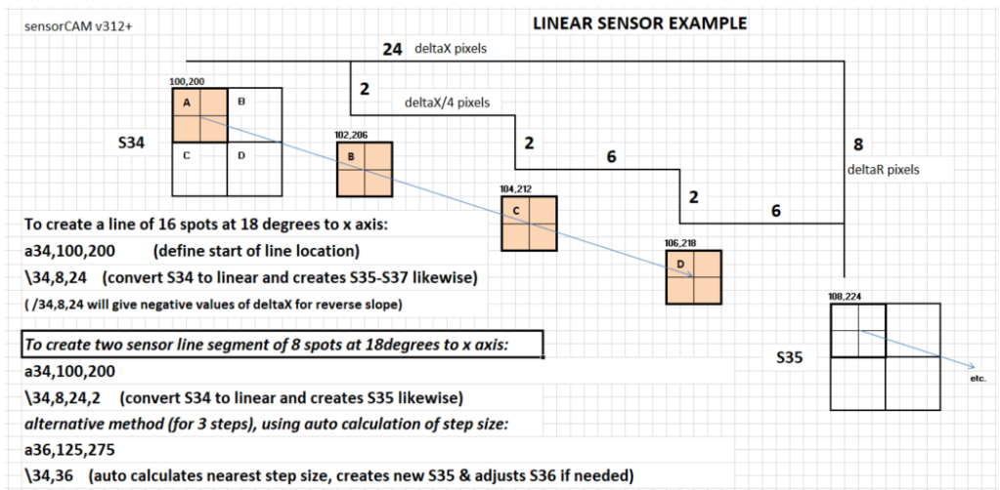
After creating a line, a refresh (Y) of the Processing4 image should show a series of standard sensors placed on every fourth spot (e.g. S34-S37). Interpolate between top left sensor quadrants for visual line alignment. v312+ shows the(orange) spots between Sensors.
To create a "curved" intrusion curtain line, one can start at the top with a straight line and then change the slope() on each successive S%% checking the image after each adjustment. Alternatively place up to 8 std. consecutive sensors and then convert each in turn to a joining line using \%% repeatedly.
While individual sensor segments can be read by the Command Station in the usual way, a line sensor should normally be read/tested as a bank. The sensorCAM 'b' command shows a byte value dependent on all sensors in the bank in bits 7-0. The "value" of a bank will rise if sensors set the bits such that, for the example above, the value will exceed 16 (2^4) if any sensor in the range S34-S37 is tripped. The EX-RAIL commands, such as IFGTE(CAM 034, 16), will respond to the tripping of the line sensor.
The line sensors may require an individual pvtThreshold rather than Threshold as their sensitivity will differ. The line sensor can have a pvtThreshold PROVIDED it is only stored in the last sensor (e.g. S37). If a pvtThreshold is set (under 99) in the last sensor, it trims the line by 3 steps restoring the (S%7) sensor to a normal (4x4) square. Remember to save (to EPROM) the new line sensor with the 'e' command.
If precision less than 1 degree is needed, consider a tiny CAM rotation to help alignments (e.g. fiddle yard).
While setup without an advanced GUI is fiddly, most situations can be handled. The following examples may help visualize the requirements.
Note: To get good image updates make sure the CAM has flashed before the new Y cmd. One sure way to do this is to issue the 't2' command for two new frames.
Straight line sensors (S33 to S37 & S40 to S47) were created by positioning end Sensors & using \%%,%% End Sensors were initially placed using a%% followed by a click on the image and Enter and then issuing the '\' cmd. (e.g. \40,47) to automatically interpolate for the nearest straight line. These lines can go upward.
Curved sensor banks can be constructed from a series of prepositioned standard 4x4 sensors and then converting them individually using '\%%' to join two consecutive sensor positions as was done for bank 2 (S21-S27) in this example. Place the cursor fingertip exactly where you want a linear point as the point is placed in the top left corner of the Sensor box.
Line sensors, developed for visitor intrusion curtains, are currently automatically bent if needed to avoid crossing the bottom edge or placing sensors very close to the edge where they have been found to be particularly noise sensitive. In the image below, line sensor generated from '/40,15,15' has hit the edge.
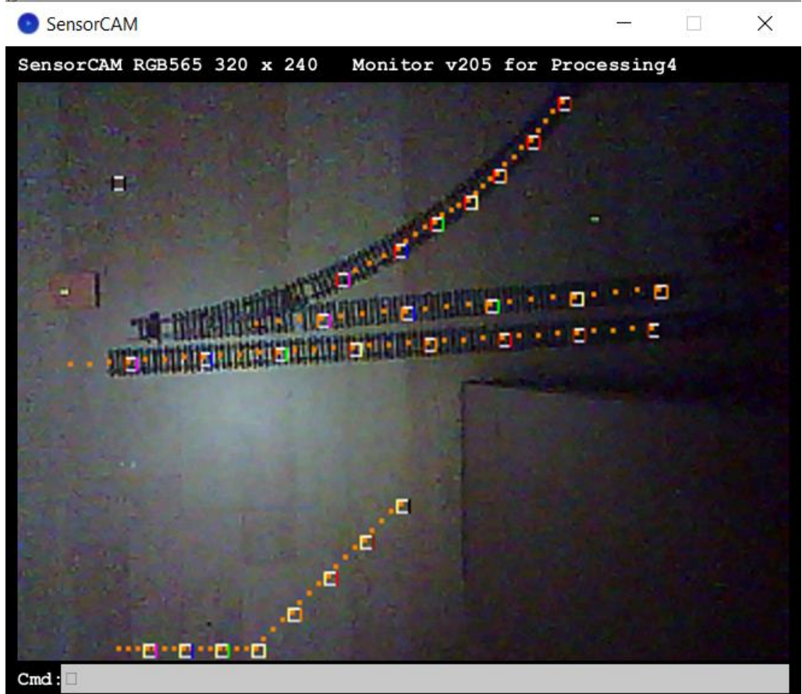
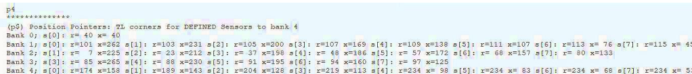
APPENDIX E¶
Tabulated DCC-EX-CS ID's for sensorCAM¶
Table B below shows the colour code used to identify sensors on the Processing 4 track image.
For example, sensor S12 has a bsNo 1/2 for which the colours are Brown/Red (seen on sensor box edges).
For CAM number 1, the full CS sensor S12 ID is 112 when used in CS native <N> commands such as <N i 112>
The use of the CAM # can be optional. If only one CAM is installed (or selected), <Ni 12> is sufficient.
For EXRAIL it can be tested so: AT(CAM 012) where the vpin is invisibly calculated as (700+012).
N.B. The use of the '0' after CAM is essential in EXRAIL.
The colour code is the standard resistor value colour code for 0-9.
Under normal circumstances if the CS has been configured as per the installation instructions, there is no need to refer to the vpin of any Sensor. They are all relative to the baseVpin of the CAM.
The full ID consists of CAM number #-bank-sensor or #bs. Each bank(0-9) contains 8 sensors(0-7)
vPin is the (CAM number # baseVpin) + 0bs, bsNo skips id's ending in 8 or 9. (e.g. 700 + 012 = 710)
vPin is the base/first vPin number (e.g. 700) + DEC(bsn)number in the conversion table below.
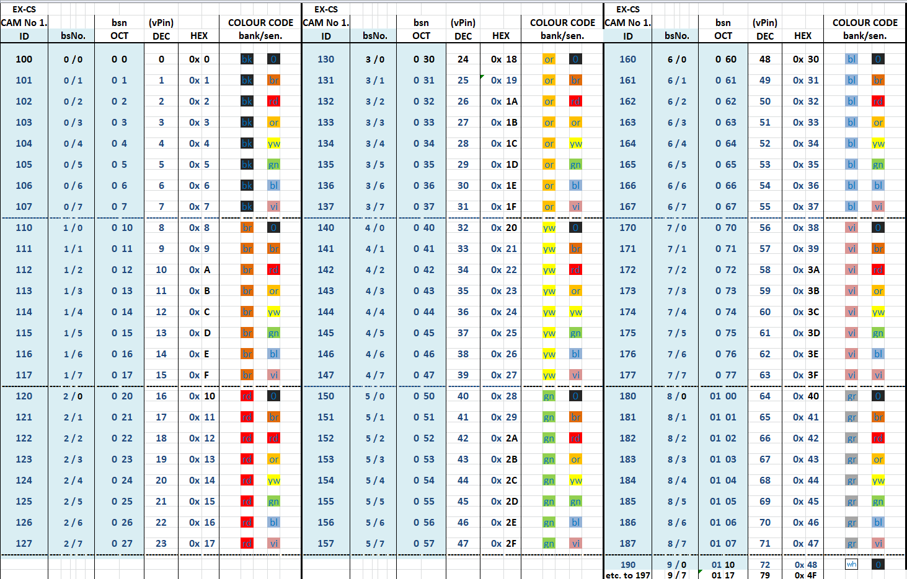
Table E Reference Sensor ID to colour code conversion table
APPENDIX F¶
Hardware Interface (PCA9515A& & Endpoints)¶
Note: This Appendix focuses on the ESP32-CAM-MB implementation, but as an alternative, consider the newer ESP32 WROVER-CAM and breakout board, as mentioned in Section 7, Figure 6 for a simpler implementation.
The ESP32 CAM drives GPIO pins with 3.3V logic. This may well be incompatible with the master l2C signals at 5V. It is essential that appropriate voltage level shifting and buffering is used where necessary. Unbuffered I2C is limited in range but a Sparkfun differential i2c driver/endpoint may also be used to achieve long lengths and voltage shifting (3.5v to 5v) if needed.
The sensorCAM can be Reset remotely by software or by cycling the power supply. The CAM MUST be rigidly mounted as its response to any image vibration can trip sensors. It is best not moved after sensor location programming as precise realignment could be tedious. It is, however, advisable to make guides or jig arrangement to at least be able to remove (for maintenance) and return with minimal misalignment to cover the same field of view. The LED method of placing/positioning sensors may be necessary if a long USB cable is impractical. A 5m buffered USB cable might be advantageous. Even so, programming or imaging over a very long USB cable may not be satisfactory.
The PCA9515A based module offers a simpler, but limited, interface to an i2c bus the use of will act as a level changer (3.3V to 5V) and can connect to a SHORT i2c bus (max 2-3m). You may use 2mm foam adhesive tape to mount a PCA9515A on the back of an ESP32-CAM-MB and solder on the 5 jumper wires directly as shown below. If the i2c length is near or just over the limit, an optional LTC4311 extender can be attached to boost the signal. As indicated, this option relies on 5V USB power so needs a dedicated (permanent) USB cable connection. A local 5v buck converter can be used beside the CAM for a better supply. This is included on the Wrover breakout board. You could also extend a cable between the PCA9515 buffer and CAM (1m).
A programmable nLED and 330ohm resistor may be attached to the PCA9515A from 3.3V VCC to GPIO14 to aid testing. Also useful on a Wrover CAM if on that path.
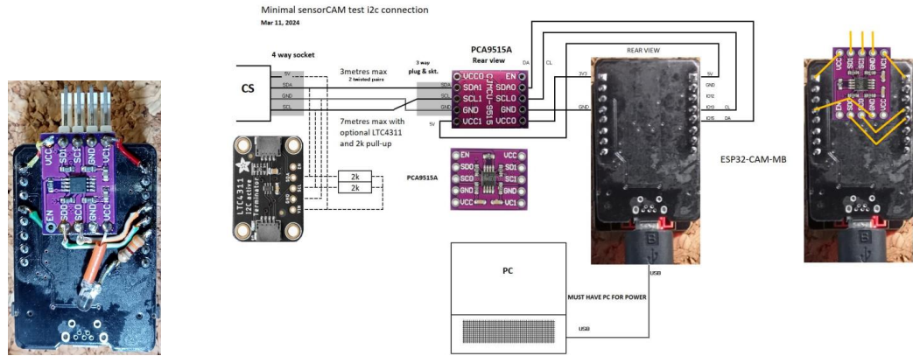
Alternatively, The Sparkfun endpoint is perhaps the best overall solution at this stage for driving one (or more) sensorCAMs. It provides greater lengths of cable without extending the Command Station i2c local bus. The endpoints are used in pairs, connected by a long (<100m) differential pair cat5 cable providing power and communications. It can provide buffering, level shifting and power, but care is needed at the CS end to avoid over-voltage damage. It is suggested, with a 5V CS, that the Endpoint pullup jumpers at the CS end be cut for safety. The sensorCAM Endpoint default pullups are needed for the 3.3V CAM i2c bus. The CS Endpoint requires 3.3V power(from the CS) and a separate (7 to 9V) DC supply for the Buck & CAM.
Typical device applications (with BUCK 5V inverters):
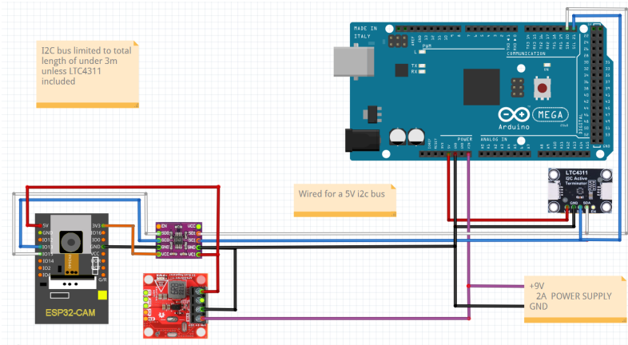
Sparkfun endpoints(requires a matching sparkfun endpoint at CS)(CS interface option B)
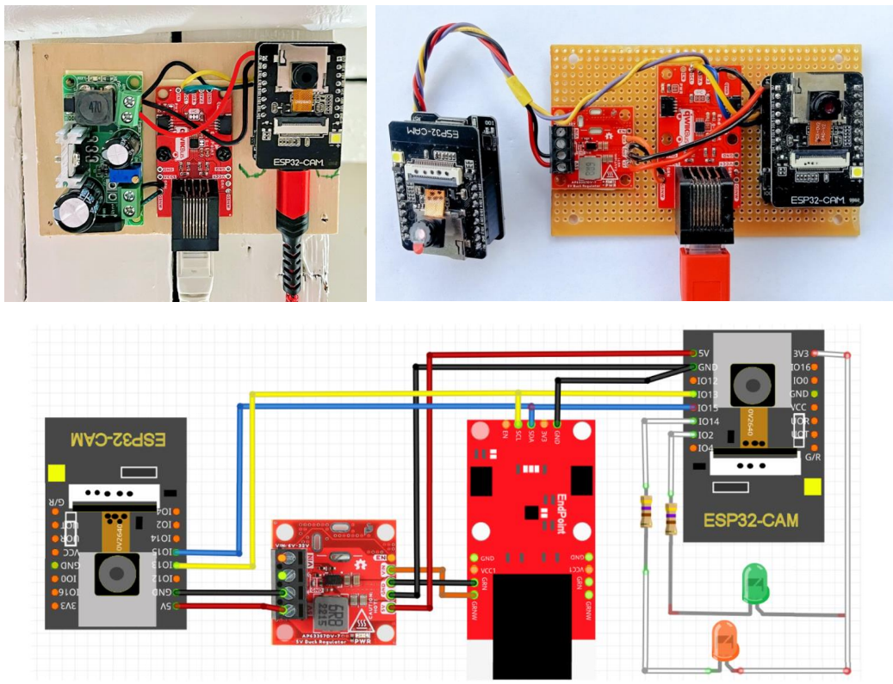
(Dual optional) CAM wiring with Endpoints and 5V Buck reg. powered over GRN-GRNW(Vin) with Vin(>7V)
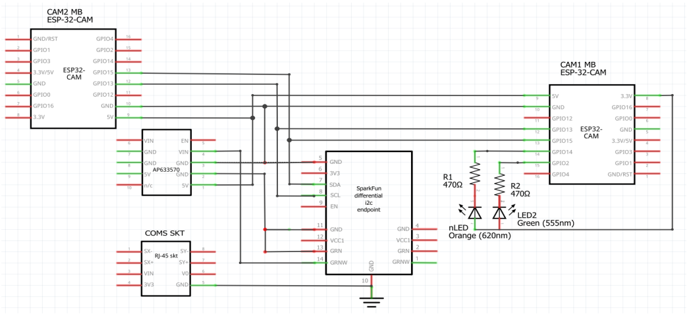
With Dual CAM header:
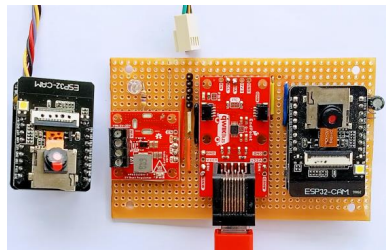

NOTE: Take care to cut copper strips appropriately!
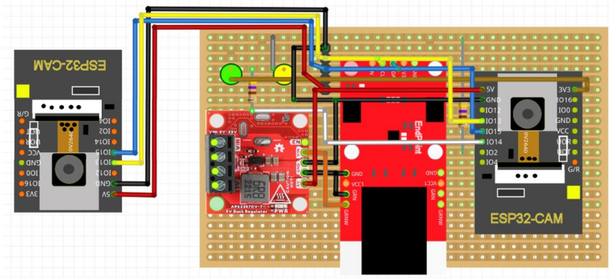
There are three basic variations below for connecting the Endpoints to the CS. The choice depends on the current system being extended. Options A & B apply to a 5Volt I2C bus on a 5V CS with or without existing I2C accessory connections, while Option C is the simplest connection to a 3.3Volt CS i2c bus.
The 2x Endpoints require about 10mA each. All options can be adapted for use with a mux if necessary. The choice between A and B depends on the power supplies available. If the CS Endpoint is to be tapped into a "remote" 5V i2c bus location, a CS 3.3V supply may not be available, only a 5V I2C supply. Option B removes one 10k pullup resistor pair from the bus to avoid inappropriate pull-up voltage(3.3V).
Option A: CUT CAM endpoint jumper 0-1 and supply 5V and 3.3V from the CS. Option A connections results in a 5V i2c interface to 3.3V differential cable for 5V microprocessor based CS (e.g. Mega).
Option B: may be used if the CS 3V3 regulator is more convenient. CUT two CS Endpoint I2C jumpers to disconnect the on-board I2C pullup 10k resistors and 3v3 from the bus. This adds load to the i2c bus data so may need extra pullups to 5V. This does function but is not recommended.
Option C: used with newer (32bit) MPU's (e.g. CSB1) & uses 3V3 throughout. No Endpoint jumpers need to be cut. Whichever option is used, the user should consider if the I2C bus needs to be tuned differently. For very short extra cable length to the Endpoint and only one extra device count on an I2C bus under 1m in length, tuning may be unnecessary. In marginal conditions consider returning as per DCC-EX recommendations.
A FOR 3.3V Differential drive 5V CS I2C BUS¶
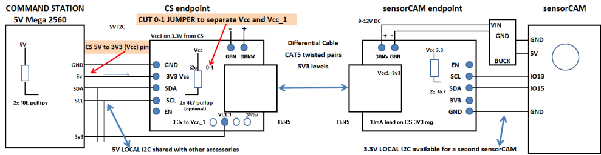
B FOR 3.3V Differential drive 5V CS I2C BUS¶
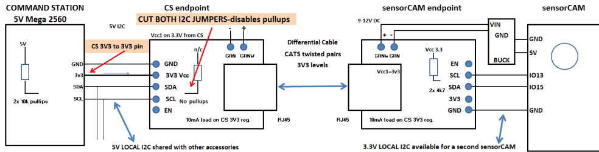
C FOR 3.3V Differential drive 3.3V CS I2C BUS¶
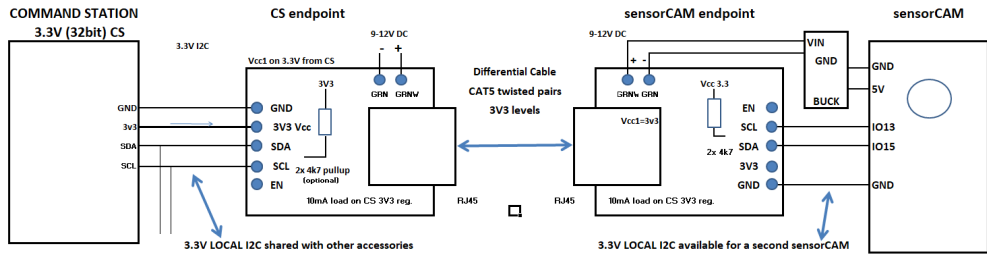
APPENDIX G¶
I2C sensorCAM commands & PROTOCOL¶
With version 3.00 of IO_EXSensorCAM.h CS driver, commands and parameters are sent to the CAM as a short string of binary bytes to be interpreted by sensorCAM. Return data (if it is applicable) is also in compact byte format as below. Other commands respond with "ACK OK".
The sensorCAM sends packets of data to the i2c bus master upon request. The data sent is dependent on the last command received as that command prepares a packet in anticipation of a bus Request. Only nine commands can affect the return packet format. They will contain the relevant ASCII command character in the first (header) byte, followed by data. These are listed below.
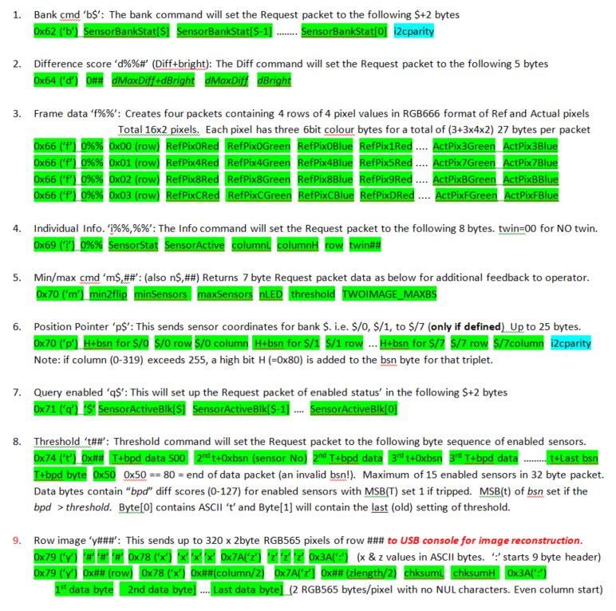
APPENDIX H¶
Notes on use of EX-RAIL with sensorCAM¶
1. Sensor/vpin Numbering¶
The numbering of sensors can be consecutive by vPin, which is the common practice with multi-pin peripherals (e.g. PCA9685 16-channel Servo driver and MCP23017 16-channel GPIO Expander). Sequential vPin numbers within a device is hardware enforced, but this loses some of the advantages available by a more meaningful ID notation. Such ID's are available for jmri use and so can also be used for sensorCAM. Use of IDs, as suggested below, can remove any need to program with vPin numbers.
For any peripheral device, the vPin is needed for commands (e.g.700+5), but, if predefined (e.g. in config.h), alphanumeric names such as CAM or CAM2 or ESSEX can be used in place of the base vPin to identify the camera. Then commands for CAM pin 5 become: e.g. AT(CAM+05) or AT(ESSEX+05)
e.g.
#define SENSORCAM_VPIN 700 //place in config.h or myAutomation.h or mysetup.h
#define CAM SENSORCAM_VPIN+ //in config.h or myAutomation.h or mysetup.h
Valid EXRAIL commands: AFTER(CAM 5) AT(SENSORCAM_VPIN+7) IFGTE(CAM 010, 2)
To avoid frequent “CAM” in scripts, an alias can be assigned e.g. ALIAS(ESSEX_P1, CAM+0x10)
With each sensorCAM having up to 80 sensors, it is desirable to test groups of (1 to 8) sensors with a single EXRAIL test using the IFGTE() or IFLE() commands. To do this, the sensors are logically arranged in "banks" of (consecutive) vpins. The logical grouping available can be written in the form "bs" or b/s where b can have bank values of 0-9 (10 banks) and s values 0-7 (8 sensors). IFGTE and IFLT read a whole bank "value". Native CAM commands can also be issued e.g. PARSE(“<N b 4>”) for bank 4. However consecutive PARSE() commands should be separated by a PAUSE(400) to give the CAM time to complete its action.
EXRAIL can accept "b/s" numbering (e.g. 047) if we add the leading 0. e.g. vpin= SENSORCAM_VPIN+ 047 so use IFGTE(CAM 047,1) provided values are defined for SENSORCAM_VPIN & CAM(as above).
(N.B. "CAM" includes the '+') Using this method there is no need to remember assigned vPin values!
Example 1: For the approach to a signal, several sensors may be deployed (say S13 to S17) with S17 last at the signal. As a train approaches the signal, the (bank) "value" of the tripping sensors will increase. This can be used to control the loco speed for a smooth and precise stop at a platform, for example.
Commands IFGTE(CAM 013,8) SPEED(40)... IFGTE(CAM 013,16) SPEED(30) etc. can be used to control the loco approach speed with some precision.
Finally, at the signal(S17), IFGTE(CAM 013,128) STOP
Aliases could also be defined and used for station/bank or line sensors.e.g. IFGTE(TRENTHAM, 0x80)
Example 2: The CAM can have up to 10 occupation/line detectors. If two "linear" line sensors are needed, and we have bank 1 allocated (S10-S17), the following 16 vPins could be assigned to 2 banks of linear sensors. We can use (bs#) ID of 20 to 27 for first linear sensor(bank2) and 30-37 of bank3. The Command Station can easily handle banks of 8, using an ID based format of (CAM 020) and (CAM 030). The "bank" or b/s notation requires the leading '0' on the bsNo. for automatic vpin calculation. The linear segments at S21 to S27 may also be tested individually and a common bank threshold can be set if needed. e.g. IFGTE(CAM 020,1)...// bank occupied, or IFGTE(CAM 024,16) //2nd half occupied.
Note: With '0%%' notation, unless you understand the issue, avoid using bank 8 & 9 as mistakes may arise. (08# must be expressed as 010# and 09# as 011# for correct outcome)
2. Multiple Cams¶
Multiple sensorCAMs can be easily handled if CAM2, CAM3 etc are defined along the lines of CAM above, so IF(CAM2 012) tests a different sensor to IF(CAM3 012), provided SENSORCAM2_ VPIN etc. are defined. Using CS native commands, e.g. <Ni 212> and <Ni 312>, can also access S12 on different CAMs. The #define SENSORCAM_VPIN ### is essential for cam1. Do NOT insert a 1 in to SENSORCAM_VPIN. You may use SENSORCAM2_VPIN and SENSORCAM3_VPIN with CAM2 and CAM3 in config.h
APPENDIX I¶
Configuring EX-CS to connect to sensorCAM¶
A number of parameters and files may need to be changed or included to get the EX Command Station to respond appropriately to the sensorCAM. The (CS) modifications are to be placed in the directory containing CommandStation-EX.ino BEFORE final compilation and upload to the CS(Mega). Some further changes to vpins and i2c addresses may be required to avoid conflicts with previously installed EX-CS devices.
Refer to the sensorCAM Installation Guide for more detail on the EX-CS installation procedure.
File edits to configure EX-CS for sensorCAM:¶
(refer to the latest InstallationGuide for details)
configCAM.h // adjust ADDR, SSID & PWD if required before uploading sensorCAM.ino¶
#define WIFI_SSID "xxxxxxxxx" //insert your#1 WiFi network nane here(2.5GHz)
#define WIFI_PWD "xxxxxxxxx" //"your network password"
#define TWOIMAGE_MAXBS 030 //slower& more reliable averaging if below S30.(<097)
#define I2C_DEV_ADDR 0x11 //17==0x11 for BCD layout so can use existing Mega Master
#define SUPPLY 10 //local mains frequency dependent(currently just use 10)
#define BAUD 115200 //any slower will degrade image transfer speed
#define SEN_SIZE 0 //0 gives standard 4x4 pixels
CommandStation(CS) //following files all in CommandStation-EX.ino folder.folder¶
IO_EXSensorCAM.h // driver for sensorCM to be used with CamParser.cpp`¶
// CamParser.cpp and CamParser.h are included in CommandStation-EX versions 5.4.0+
config.h //standard should do for single CAM at Vpin 700& address 0x11¶
#define SENSORCAM VPIN 700 //defines a suitable virtual vPin for the FIRST sensorCAM
#define CAM SENSORCAM VPIN+ //alias to replace vpins in EXRAIL e.g. AT(CAM 021) i.e.S21
#define SENSORCAM2_VPIN 620 //only if a second CAM has been created in myHal.cpp
#define CAM2 SENSORCAM2_VPIN+ //ditto
myHal.cpp //(preferred: use HAL() in myAutomation.h as per Installation Guide)¶
```#include"IO_EXSensorCAM.h" // sensorCAM driver for CS void halSetup(){ //add in the following two lines minimum. EXSensorCAM::create(700, 80, 0x11); //max 80 digital(0 Analogue) Vpins to 779. // or EXSensorCAM::create(SENSORCAM_VPIN, 80, 0x11); //#define.._VPIN(s) in config.h. // using < 80 sensors(fewer banks) may save vPin & RAM use. EXSensorCAM::create(620, 80, 0x12); //can use multiple CAMs if needed e.g.@620
#### mySetup.h // a second CAM may use vpins 620 to 699 range if no conflicts
```c++
I2CManager.setClock(100000); //to slow i2c bus clock rate (or .forceClock(100000);)
SETUP("<Z 100 7000\>"); // set as output for now(used for<D ANOUT>\&<N\> cmds)
// start of up to 80 sesnsors numbered bsNo's 000 to 097(0/0 to 9/7)
SETUP("<S 100 7000\>"); // first sensor(S00) at SENSORCAM VPINO 700 by default
SETUP("<S 101 701 0\>"); //
SETUP("<S 102702 0\>");
//setup as many as you want. You can add later manually with CS native<S\> cmds.
SETUP("<S 107707 0\>");
SETUP("<S 110708 0\>"); //note recommended id is 1%%(b/s) format, vpin is DEC.
// etc.
//SETUP("<S 196 778 0\>");
//SETUP("<S 197 779 0\>"); //maximum sensor id for number "1" sensorCAM.
// vPin 700 also used by sensorCAM Native commands<N\>(Appendix C)
//SETUP("<S 200 620 0\>"); //e.g. for a second sensorCAM at SENSORCAM2_VPIN0 620
//to setup bulk sensors(e.g. 210 to 297 for a cam at vpin 620+) can include C++ code here so..
//for(uint16_t b=1; b<=9;b++) for(uint16_t s=0;s<8;s++) Sensor::create(200+b*10+s,620+b*8+s,1);
APPENDIX J¶
WROVER & ESP32-CAM notes¶
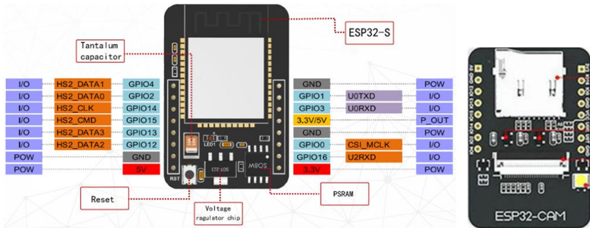
N.B. CAM v1.6 has 4x jumpers (cam side) near U0R/U0T pins & CAM v1.9 has 6x jumpers (including RST)
In board version v1.9, the "GND" pin adjacent GPIO1/U0T is used for RESET(GND/R) to ESP32-CAM and MUST NOT be tied to GND or CAM will remain in RESET mode. CHIP version shows at start of upload, e.g.
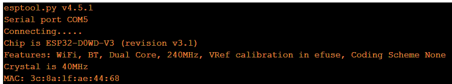
The esp32-CAM-MB obtained with extra headers uses a small CH340N IC unlike the 16 pin package used on the "regular" MB devices (micro-B). The wider MB (headers) also has an issue in that it does NOT have a reset pin because the RST/GND socket is PERMANENTLY connected to GND which will hold CAM v1.9 in permanent Reset.
Headers (for v1.6):

So-without butchery, can only use the v1.6 CAM's on this board, and even then will have to hold the IO0 button in (grounding it) on reset until upload is progressing. As a workaround for v1.9, it may be possible to carefully slice off this MB GND socket completely. View the Camera side of the ESP32-CAM to distinguish the CAM boards.
Identification: ESP32-CAM v1.6 has 4x jumpers beside UOR/UOT pins and v1.9 has 6x jumpers (inc. Reset).
Using v1.6 with no RTS/DTR reset, users will have to boot up holding IO0 button in to get into programming mode. MB boards are sold mostly without headers and can come with either Type-C or micro-B in either size, 1 or 2 button.
1 Note on i2c clock frequency¶
The newer sensorCAM drivers default to an i2c bus frequency of 100,000 Hz. With caution, this may be increased somewhat (e.g. 200000) if the i2c bus is well tuned and all attached devices can handle higher frequencies. To set a higher frequency, for example, place the following in mySetup.h or_ myHal.cpp_ I2Cmanager.forceClock(200000); //place after void halSetup(){
2. Notes on 40-pin WROVER CAM and 38-pin breakout board¶
Potentially simplest commercially available hookup for 40 pin WROVER-CAM:
Software configuration: add #define CAMERA_MODEL_WROVER_KIT to bottom of configCAM.h
2x "Spare" (USB end) Vcc and GND pins not used with the 38 pin breakout board shown. (remove?)
Adding 1.0uF capacitor between reset (EN) pin and gnd ensures more reliable power-on reset.
Add a super-bright green LED and 330R from 3.3V to GPIO14 for programmable LED indicator.
There is no white "flash" LED but, in sensorCAM mode, the on-board blue LED flashes instead. (GPIO2)
The breakout board USB connectors are for an optional 5V power source ONLY. No comm's.
Limit Vin barrel jack to 7-10V max to avoid destruction of the 1117C 5V regulator (Vne = 16V).
The CS endpoint shown should be powered with 3.3V from the CS end (NOT 5V), and 9V on GRNW/GRN
Note: WROVER-CAM does not have a fitted external antenna socket like the ESP32-CAM.
For a limited reach, perhaps using a LTC4311 terminator/buffer at the CS to boost signal rise times and range, the cheaper PCA9515A may be used with the Wrover-CAM connected as below. The cable to the CAM can be up to 2m long using twisted pairs (cat5?).
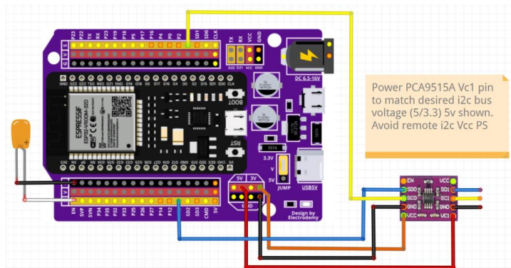
3. Note on enhanced 't' command for handling/clearing pvtThresholds (version v319+):¶
t0,%% will cancel a pvtThreshold on S%% as always.
t1,%% will cancel ALL pvtThresholds in bank% e.g.t1,30
t1,99 will cancel ALL pvtThresholds in the sensorCAM(i.e.S00 to S97)
t99 will list ALL pvtThresholds in the sensorCAM by bank#(10 banks)
t1 will toggle SCROLL ON/OFF as always. The'e' command is needed to make changes"permanent"
Version v319 also accepts minSensors up to maxSensors-1
m#,%% will set maxSensors to%%. e.g. m10,30 sets maxSensors=030 (leaving min2trip unchanged as does m0,30)
n#,%% will set minSensors to%%. e.g. n10,27 sets minSensors=027 leaving nLED unchanged. n0,27 would set nLED to 0)
4. Notes on CS drivers v308 & v309)¶
Driver version v308 is intended for use with Prod versions 5.4.6 to 5.4.16. DCC-EX CS Prod. Versions 5.4.16+ incorporate v308 by default. v308 will not work with CS devel 5.5.15+. For CS devel versions look to v309 (default). Both these drivers MUST be used with sensorCAM version v320+ as earlier versions will not be recognized.
ADDITIONAL RANDOM NOTES:¶
ALL FOLLOWING IMAGES ARE FOR GENERAL INFORMATION ONLY & NOT DIRECTLY REFERENCED IN THE FULL MANUAL ABOVE

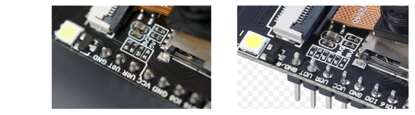
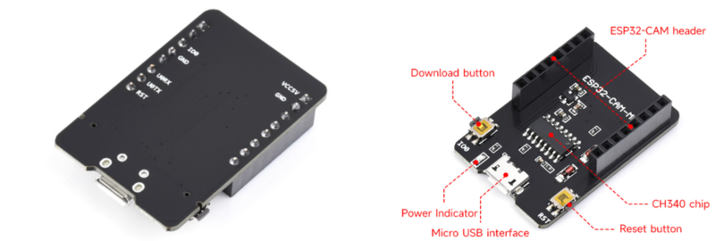
Antenna solder jumper adjustment
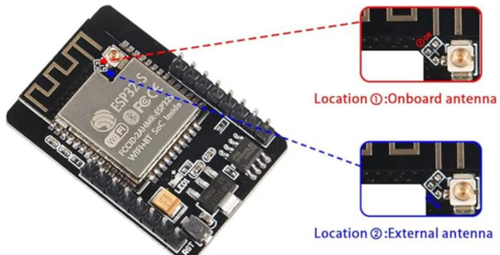
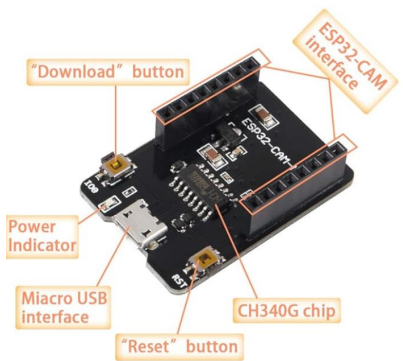
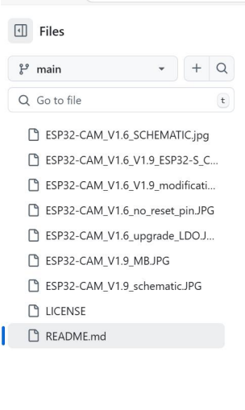
xiaolaba Update README.md
$$ 4fe66d3\cdot 2\text{ years ago} $$
ESP32-CAM_V1.6_V1.9_MB¶
● ESP32-CAM-MB, base module design, schematic
● ESP32-CAM V1.6 modification to uses external RESET pin and the auto download
● ESP32-CAM V1.6 modification, more stable
● upgrade to ESP32-CAM V1.9
looks like V1.6 is the same as V1.9, really? - The jumper difference is not obvious here
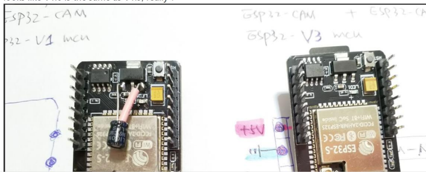
Spec sheet: Typical applications include a 22uF cap between AMS1117 3v3 reg ADJ/GND pin and Vout, not on CAM but can be added as above for "better" performance.(hopefully less noise?). Also shows 10uF on 5Vin
There is a range of ov2640 cam modules available with ESP32 or independently sold. The"IR" option would be an interesting experiment and might open up new possibilities, but monochrome IR images harder to spot intrusions. The usual ov2640 is $66^{\circ}$ , but $120^{\circ}$ fish-eye covers more, at the expense of detail. $120^{\circ}$ better for low ceilings??
Web offers range of lenses including"850nm night vision" which probably is OV2640 sans IR filter?(IR>700nm)
Long(75mm) and short(21mm) ribbon ov2640, angles 66(std?),100,120,160deg lens,650nm or 850nm(night vision), opt. antenna for marginal wifi. NONE, other than standard 66deg OV2640, are currently recommended.
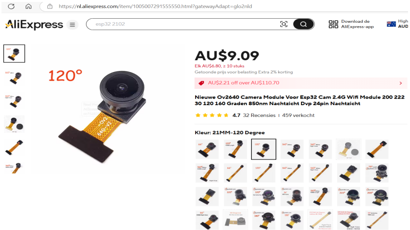
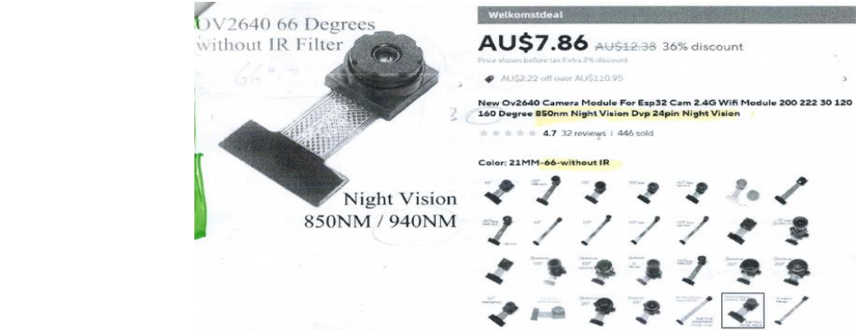
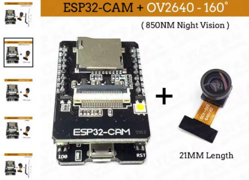
AU$28.59 Elk AU$24.59,≥3 stuks Getoonde prijs voor belasting Extra 2% korting¶
ESP32 CAM Cameramodulekit 2,4 GHz WiFi Bluetooth 8 MB PSRAM OV2640 Cameramodule 120 66 160 graden 850 nm Nachtzicht 2 MP¶
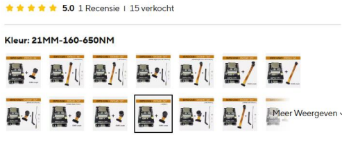
Acceptable alt. WROVER CAM¶
1 December 2025